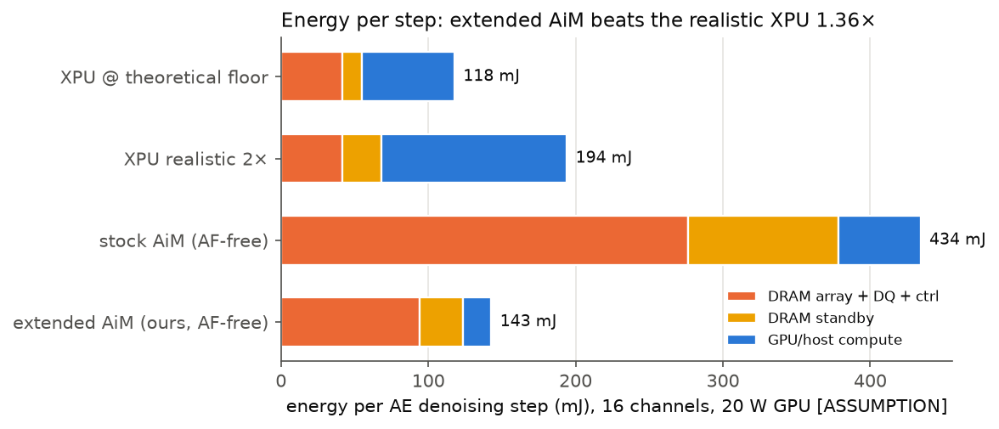

LPDDR5, Stock AiM, and Why the Offload Loses 6.4×: the Problem, Quantified
Part I showed the π0 Action Expert is memory-bound: 623 MB of weights re-streamed for 38.7 GFLOPs, every step. Processing-in-memory should fix exactly this. We map the AE onto a cycle-level SK hynix AiM-style LPDDR5-PIM simulator at Jetson-Orin memory parity (16 × x16 LPDDR5-6400 channels = 204.8 GB/s) — and the stock offload loses: 40.2 ms per denoising step vs. 6.3 ms for an optimistic XPU baseline (the optimistic bound, 2× the bandwidth floor), at the 5 ns all-bank column of a real LPDDR5 core; 28.5 ms even at the optimistic 2.5 ns column. This page explains the machine, the mapping, the measured breakdown, and the crossover law that makes a “memory-bound” workload lose on PIM.
Overview
Part III of the series. The punchline is a negative result with a precise cause: the stock AiM ISA amortizes each in-bank memory fetch over one vector, one accumulator, and one register mode — and π0's 51-token suffix needs the opposite. Part IV fixes it. Part III-2 runs the identical workload on Samsung’s PIM and finds the same disease with a smaller magnitude — for a reason that says more about the two microarchitectures than about the two ISAs.
How this page is organised. §1–4 are an LPDDR5 primer for architects: the interface (§1), the inside of the die (§2), commands and timing (§3), and what the DRAM substrate allows a PIM designer to build (§4). §5–7 describe the AiM machine, its instruction set and the simulator. §8–10 map the π0 action expert onto it and walk one GEMV cycle by cycle. §11–12 quantify the problem and state its root cause. §13 collects the questions readers asked about the primer, with answers. Readers who know DRAM can start at §5; readers who only want the result can jump to §11. One unnumbered aside, “Peek: our AiM P1 design”, sits between §2 and §3 and answers two questions §2 raises: what toggles the data pins sixteen times inside one burst, and how many PU cycles fit in the same window.
1LPDDR5 from the outside: package, channel, pins, power
§1–§4 are a self-contained LPDDR5 primer written for a computer architect: §1 is what the SoC sees, §2 is what is inside the die, §3 is how it is operated (commands, timing, refresh, power), and §4 is what all of that implies for putting compute inside it. If you already know what a row buffer, a bank group and WCK are, skip to §5. Sources are listed by topic at the end of the page; values that are this page’s modelling choice rather than a property of real parts are marked [preset] or [assumption].
What “LP” buys, and what it costs
LPDDR (“low-power double data rate”) is the DRAM family built for phones, tablets, cars and now robots. It is the same 1-transistor-1-capacitor cell array as desktop DDR, wrapped in an interface designed around one goal: burn almost nothing when idle, and as little as possible per bit when busy. Four design decisions follow from that goal, and each one shows up later on this page:
- Short, point-to-point wires. LPDDR does not go on a DIMM: the packages are soldered millimetres from the SoC or on top of it (recently also on a short-trace LPCAMM2 module), so the signalling can use a very small swing: LPDDR5 I/O runs from a 0.5 V rail (0.3 V in a low-speed mode), terminated to ground, with a high level of only VDDQ/2 = 250 mV. A line driven low burns no static current.
- No delay-locked loop on the DRAM. Desktop DDR keeps a DLL running so that read data leaves the chip aligned to the clock. LPDDR drops it to save standby power. The price is that the delay from clock to data is wide and drifts with temperature and voltage (LPDDR5: 0.65–1.6 ns, several bit-times at 6,400 MT/s), so the SoC must measure it at boot and keep tracking it — that is what “training” is (§3). It also means the die has no clock multiplier: every clock on the die is one the SoC sent, or a division of it (§2).
- The fast clock is only on when data moves. LPDDR5 splits the clock in two: a slow command clock (CK) that runs whenever the memory is in operation and a fast data clock (WCK) that the SoC may stop between transfers.
- Many ways to go to sleep. Power-down, self-refresh, deep-sleep, partial-array refresh, and up to three pre-trained frequency set points the SoC can hop between in a fraction of a microsecond.
Vocabulary: package, channel, rank, die
Four words are used loosely in papers; here is what they mean for LPDDR5.
- A die is one piece of DRAM silicon: 8, 12 or 16 Gb are the common LPDDR5 densities (the standard defines 2–32 Gb).
- A channel is one complete, independent interface: its own clock, its own command/address pins, and 16 data pins (x16). A channel can be driven without regard to any other channel. At 6,400 MT/s a channel moves 16 pins × 6,400 Mb/s = 102.4 Gb/s = 12.8 GB/s. Classic LPDDR5 dies expose one x16 channel per die; some newer LPDDR5X dies expose two.
- A rank is a set of dies that share one channel’s wires and are picked by separate chip-select (CS) pins. Ranks add capacity, not bandwidth: only one rank drives the data pins at a time.
- A package is the soldered part. It stacks several dies and brings out 2 or 4 channels (a “x32” or “x64” package), each with 1 or 2 ranks.
Fig. L1 — The memory subsystem this series compares against. NVIDIA specifies Jetson AGX Orin 64GB as “256-bit LPDDR5, 204.8 GB/s, 3,200 MHz” (3,200 MHz is the WCK frequency, i.e. LPDDR5-6400): 256 data pins = 16 independent x16 channels. A teardown reports four 16 GB packages, i.e. x64 each, which is how the figure draws it [the package count is not in NVIDIA’s datasheet]. The right half lists every signal of one channel; note there is no clock-enable pin — LPDDR5 enters and leaves power-down by command.
| platform | memory, as specified by NVIDIA | data pins | x16 channels | peak bandwidth |
|---|---|---|---|---|
| Jetson Orin Nano 8GB | 128-bit LPDDR5, 2,133 MHz | 128 | 8 | 68 GB/s |
| Jetson Orin NX | 128-bit LPDDR5, 3,200 MHz | 128 | 8 | 102.4 GB/s |
| Jetson AGX Orin 64GB | 256-bit LPDDR5, 3,200 MHz | 256 | 16 | 204.8 GB/s |
| Jetson Thor T5000 | 256-bit LPDDR5X, 4,266 MHz, 128 GB (8 × 16 GB) | 256 | 16 | 273 GB/s |
Peak bandwidth is nothing more than pins × rate: 256 × 6,400 Mb/s / 8 = 204.8 GB/s. This is why Parts II–IV count AiM in channels: 16 AiM channels have exactly the pins, and therefore exactly the external bandwidth, of an AGX Orin; 8 channels are an Orin NX.
Two reading aids for the signal list of Fig. L1. CK_t and CK_c are one clock, not two: they are the two wires of a differential pair, “true” and complement, and WCK and RDQS are built the same way (why, and why commands and data get separate clocks). And 6,400 MT/s is the rate of each single data pin: one 3.2 GHz WCK with data on both of its edges. WCK0 and WCK1 are per-byte copies of that one clock, not two clocks whose rates add up (the arithmetic).
Ranks: more capacity on the same wires
All ranks of a channel share every wire of that channel — CK, CA, WCK, DQ and RDQS — except their chip-select: CS0 goes only to rank 0, CS1 only to rank 1 (Fig. L1-2). Every rank sees every command, and only the rank whose CS is high obeys it. The data pins are one set of wires, so only one rank drives them at a time. Ranks therefore add capacity, and they hide row latency (one rank can stream data while the other waits out its 18 ns row activation), but they never raise the 12.8 GB/s peak of the channel.
Fig. L1-2 — Two ranks on one x16 channel. Grey wires are shared by both ranks; the two orange chip-selects are the only private wires, and they decide which rank a command is for. Bottom: a schematic timeline (not to scale; the delay from a read command to its data is left out). While rank 0 opens a row, rank 1 keeps the data pins busy, then the bus turns around and rank 0 sends. The DQ lane never carries two ranks at once: capacity × 2, peak bandwidth unchanged (12.8 GB/s).
In practice a channel carries 1 or 2 ranks. The limit is electrical loading: every extra die adds capacitance to a point-to-point bus whose high level is only about 250 mV, with no buffer chip to redrive it. Capacity grows instead through denser dies, through byte mode (two x8 dies form one x16 rank) and through more channels, which add bandwidth as well. This series models one rank of 16 banks per channel. More in Questions & answers.
Four supply rails
| rail | voltage | what it powers | why it matters here |
|---|---|---|---|
| VDD1 | 1.8 V | the wordline boost pump and other high-voltage core circuits; draws little current | an access transistor needs a gate voltage well above the cell voltage to pass a full ‘1’ |
| VDD2H | 1.05 V | the main core and periphery logic: decoders, sense amplifiers, datapath | this is the rail an in-die PU would sit on; GDDR6-AiM’s 1 GHz PU was built at 1.25 V |
| VDD2L | 0.9 V | optional lower core rail (“DVFSC”); may be tied to VDD2H | only usable up to 1,600 Mb/s, so not at the speeds on this page |
| VDDQ | 0.5 V (0.3 V) | the I/O drivers | 0.3 V (“DVFSQ”) requires termination off, i.e. low speed |
For scale: a Micron LPDDR5X x16 channel reading flat-out at 8,533 MT/s is specified at a maximum of about 382 mA on VDD2H, 121 mA on VDDQ and 16 mA on VDD1, i.e. roughly 0.5 W or 3.6 pJ per bit including the core; LPDDR5-6400 parts are specified at 0.35–0.46 W, 3.4–4.5 pJ per bit [our arithmetic on datasheet maxima; real parts draw less]. Idle it is ~30 mW, in power-down ~5 mW, in self-refresh under 1 mW at 25 °C. Keep the ~0.5 W in mind for §4: it is what the die’s power grid is sized for with one column path active at a time; an all-bank PIM command turns on sixteen.
The generations, for orientation
| LPDDR4X | LPDDR5 (2019) | LPDDR5X (2021) | LPDDR6 (2025) | |
|---|---|---|---|---|
| top data rate / pin | 4,266 MT/s | 6,400 MT/s | 8,533 MT/s in the standard; 9,600 parts ship | 10,667–14,400 MT/s |
| core / I/O voltage | 1.1 V / 0.6 V | 1.05 (0.9) V / 0.5 (0.3) V | same | lower again |
| command bus | 6 pins, one edge, 2-cycle commands, clock up to 2,133 MHz | 7 pins, both edges, 1-cycle commands, clock ≤ 800 MHz | same, clock ≤ 1,067 MHz at 8,533 (1,200 MHz at 9,600) | per-sub-channel |
| data clocking | bidirectional strobe (DQS) | WCK from the SoC + optional RDQS back | same, plus equalisation | 24-bit channel = two 12-bit sub-channels |
| new in this generation | — | bank groups, link ECC, deep-sleep, data-copy, write-X, three frequency set points; RowHammer refresh management from the 2020 revision | Tx/Rx equalisation, adaptive refresh management | on-die ECC, per-row activation counting, CA parity |
The single most important change from LPDDR4 to LPDDR5 for this page is the clocking row: the command clock got slower (2,133 → 800 MHz) while the data got faster, because a separate data clock carries the speed. §2 shows what that does to the inside of the die.
2Inside the die: cell, row buffer, bank, bank group, and four timing domains
Now open the package. This section goes from the top down once (channel → bank → row → column, Fig. 0a), then from the bottom up (cell → MAT → bank, Fig. L2–L3), and ends with the two facts that shape PIM: the column cycle of a bank group is slower than the pins (Fig. L4), and the die runs on four different time bases (Fig. 0a-2).
Structure: channel → bank → row → column
A phone- or robot-class SoC talks to LPDDR5 over several independent channels. Each channel is 16 data pins (x16) running at 6,400 MT/s, so it can move 12.8 GB/s — Jetson AGX Orin has 16 such channels, 204.8 GB/s in total. Inside one die (one rank of a channel) are 16 banks (4 bank groups × 4 at this speed). A bank is a huge grid of capacitors, the cell array, organised in rows and columns. You cannot read a capacitor directly; you first activate a row: the entire row is sensed in place, by the sense amplifiers of its own sub-array, and stays latched there. Those amplifiers are what is called the row buffer; it is not a separate memory (Fig. L3, Questions & answers). A real LPDDR5 row is 2 KB; the simulator’s is 32 KB. Only then can you read or write columns of that row, 32 bytes at a time. When you need a different row, you precharge (close) the bank and activate again.
Two words that trip people up. Activate moves the whole row. A cell is a capacitor with no drive strength, so ACT raises one wordline and every capacitor on that row is sensed and latched at once; you cannot open part of a row, which is why tRCD is paid in full even if you will read one column. The simulator’s organisation makes a row 32 KB; a real LPDDR5 die opens about 2 KB per bank on a x16 channel — our traces never use more than 64 columns (2 KB) of any row, so nothing on this page depends on the difference. A burst is the data phase of one column command. The DQ bus is 16 bits wide, so one RD cannot deliver 32 B in a single beat: the array reads 32 B from the row buffer in parallel (the “16n prefetch”, below) and the I/O shifts it out as 16 beats of 2 B, 2.5 ns at 6,400 MT/s — the 4-cycle BL in Fig. 0b (§3). Bursts exist because 16 fast pins are cheaper than 256 slow ones and one command per 32 B is a rate the command bus can sustain; the column spacing to a different bank group equals the burst time, so a controller that alternates groups issues commands exactly as fast as the pins drain them (the next subsections explain why the group matters). “One column = 32 B” and “one burst = 32 B” are the same fact seen from the array and from the pins. AiM keeps the column but skips the pins: MAC_ABK reads the same 32 B column in every bank and feeds it to the 16-lane MAC directly, and 16 lanes × bf16 = 32 B is exactly why the lane width equals the burst size.
Fig. 0a — What a DRAM channel is made of. Everything below reduces to three verbs: open a row (ACT), move one column (RD/WR), close the row (PRE). Opening is slow, moving columns from an open row is fast, and a channel can only move one column every tCCD.
Beats are not cycles. The 16 beats of a burst happen inside the 4-cycle BL, not one per cycle: LPDDR5 clocks its data pins with a strobe several times faster than the command clock and transfers on both edges, so the pins run at four transfers per simulator cycle. The column spacing (tCCD) to another bank group is set equal to BL on purpose — the next column command is allowed exactly when the previous burst ends, so back-to-back reads that alternate bank groups keep the pins 100 % busy with no gap and no collision. (The simulator preset uses this 4-cycle spacing for every column command.) That is the 12.8 GB/s in Fig. 0b(b) (§3); 64 cycles per 32 B would be 0.8 GB/s, sixteen times too slow.
| quantity | value | note |
|---|---|---|
| DQ pin rate | 6,400 MT/s | LPDDR5-6400, 16 pins |
| one beat | 0.156 ns | 2 B (16 pins × 1 bit) |
| one burst = 16 beats | 2.5 ns = 32 B | the data phase of one RD or WR |
| one simulator cycle | 0.625 ns | this page’s time unit: half a real clock period (§3, §7) |
| BL = tCCD | 4 cycles | 2.5 ns / 0.625 ns; 4 beats per cycle |
| per-channel bandwidth | 32 B / 2.5 ns = 12.8 GB/s | × 16 channels = 204.8 GB/s (Orin); 623 MB / 204.8 GB/s = 3.04 ms of the 3.15 ms XPU floor |
The cell, and why opening a row takes 18 ns
A DRAM bit is a capacitor (a few femtofarads in a modern process) behind one access transistor. The transistor’s gate is the wordline (one per row); its other side is the bitline (one per column of cells), which runs past about 512–1,024 cells to a bit-line sense amplifier (BLSA). The bitline is a long wire with several times the capacitance of the cell, and that ratio is the origin of every row timing parameter:
- Charge sharing. Before an access, both inputs of every sense amplifier are held at half the supply voltage. ACT boosts one wordline (from the 1.8 V rail), which connects every cell on that row to its bitline. The tiny cell dumps its charge onto the big bitline and moves it by only about a hundred millivolts or less, up for a stored 1, down for a 0. The cell has now lost its value: a DRAM read is destructive.
- Sensing. The sense amplifier is a cross-coupled latch that regenerates that small difference to full rail. Once the bitline is far enough along, a column may be read: that delay is tRCD (row-to-column delay), 18 ns.
- Restore. The same amplifier, still connected to the cell through the open wordline, pushes the full level back into the capacitor. Only when that is finished may the row be closed: tRAS, 42 ns from ACT. After a write, the new data needs the same treatment: tWR, 34 ns.
- Precharge. PRE drops the wordline (isolating the restored cells) and pulls both sides of every amplifier back to the half-supply level, ready for the next row: tRP, 18 ns for one bank and 21 ns when all banks precharge together (presumably because 16 banks doing it at once pull more current).
These are analog settling times set by capacitance, sensing margin and leakage, which is why they have barely moved in twenty years of DRAM generations while pin speeds rose tenfold. LPDDR5 specifies them in nanoseconds, not clock cycles, for exactly that reason: tRCD 18 ns, tRAS 42 ns, tRP 18 / 21 ns, tWR 34 ns, and one full open-close cycle of a bank, tRC = tRAS + tRP = 60 ns.
Fig. L2 — One row access as the sense amplifier sees it (schematic voltages, real LPDDR5 times). The green dashed curve is the point of the picture: the cell is emptied by the read and only gets its value back during the restore phase, which is why a row must stay open for tRAS even if you wanted one column. An entire row — 16,384 cells — goes through this together, because one wordline opens all of them.
How tRAS relates to the column spacing tCCD, and which of the two decides how long a row stays open: see Questions & answers, Q8.
From cells to a bank: MATs, stripes, and two kinds of wire
A bank is not one giant grid. Bitlines can only be ~512–1,024 cells long before the signal becomes too small, so the array is tiled into MATs (memory array tiles) of roughly 512 × 512 cells. Between vertically adjacent MATs runs a BLSA stripe, a row of sense amplifiers shared by the MATs above and below it; between horizontally adjacent MATs runs a strip of sub-wordline drivers (SWD), which re-drive the wordline locally. A row address selects one master wordline that spans the whole bank; each MAT it crosses fires its own local wordline. The set of sense amplifiers that ends up holding that row — scattered over many stripes — is what architects call the row buffer. It is not a separate memory; it is the sense amplifiers.
Getting data out of the row buffer uses a second, orthogonal wiring system. A column-select line picks a small group of sense amplifiers in each stripe and connects them to local I/O lines, which feed global I/O (GIO) lines that run the full height of the bank, over the top of the MATs, down to the bank’s edge. There, I/O sense amplifiers (IOSA) read the small swing on the GIO lines, and write drivers overpower the BLSAs on a write. An LPDDR5 x16 bank has 256 GIO bits: the standard describes an access as “a single 256-bit-wide data transfer at the internal SDRAM core, and sixteen corresponding 16-bit wide … data transfers at the I/O pins” — the 16n prefetch, n being the 16 pins. Those 256 bits are the “32 B column” of this whole series, and the bank edge where they arrive is where every per-bank PIM design, AiM included, puts its arithmetic (§4).
Fig. L3 — Left: a die is 16 banks plus shared periphery (schematic). Right: inside one bank. Orange: the open row and the two sense-amplifier stripes that now hold it — the row buffer. This full-width row is all that one ACT opens (Q7). Green dashed: the global I/O lines that carry one selected 256-bit column from the stripes to the bank edge. MAT dimensions are the commonly published ~512 × 512; vendors do not publish LPDDR5 figures [assumption: illustrative count, not to scale].
The address arithmetic of a real die
The standard’s addressing table makes the hierarchy concrete. For a 16 Gb x16 die in the mode used at 6,400 MT/s:
| level | count | address bits | what one unit is |
|---|---|---|---|
| bank groups × banks | 4 × 4 = 16 | BG0–1, BA0–1 | an independent array with its own row decoder and row buffer |
| rows per bank | 65,536 | R0–R15 | what one ACT opens |
| columns per row | 64 | C0–C5 | what one RD or WR moves: 256 bits = 32 B |
| beats per column | 16 | (burst counter) | 16 pins × 1 bit = 2 B on the wire |
Check: 16 banks × 216 rows × 26 columns × 28 bits = 234 bits = 16 Gb. One row is 64 × 32 B = 2,048 B; datasheets call this the “page size”. So one ACT senses 2 KB, one column command moves 32 B of it, and a column address is only 6 bits wide. SK hynix describes GDDR6-AiM with the same geometry: “2 KB rows (pages) with 32 B column access granularity”.
How the simulator differs [preset]. The simulator’s LPDDR5-AiM organisation gives a row 1,024 column addresses of 32 B each, i.e. a 32 KB row, 16× a real one. This does not affect any result in the series: our traces never touch more than 64 columns (2 KB) of any row, which is precisely one real row, so every ACT in our traces corresponds to one real ACT.
Banks, bank groups, and the column cycle that is slower than the pins
Banks give row-level parallelism. Each of the 16 banks has its own row decoder and its own row buffer, so while bank 0 is paying tRCD or tRP, bank 1 can be transferring columns. The limit is electrical, not logical: opening a row is the most current-hungry thing a DRAM does (it swings 16,384 bitlines and draws on the wordline pump), so the standard rations it — at least tRRD = 5 ns between two ACTs and no more than 4 ACTs in any tFAW = 20 ns window. Opening all 16 banks therefore takes about 80 ns, not 16 × 5. The Newton paper (SK hynix’s AiM precursor) says why in plain words: many concurrent activations “cause severe internal voltage drop”, and shortening tFAW would need bigger regulators and pumps, i.e. die area.
Banks do not, by themselves, give column-level parallelism, because the column path from the bank edge to the serializer is shared. And here is the fact that matters most for PIM: at 6,400 MT/s the pins are faster than the core. One 16-beat burst occupies the pins for 2.5 ns (2 clock periods), but a bank’s column cycle — column-select pulse, GIO lines, I/O sense amplifiers, latch — takes about 5 ns (4 clock periods), and the four banks of a group additionally share the group’s I/O bus towards the serializer, so the standard applies the 5 ns spacing to the whole group [our reading; vendors do not publish the circuit reason]. LPDDR5 expresses this as the “effective burst length” BL/n, its name for the minimum column-to-column time (DDR4, GDDR6 and HBM call the same two numbers tCCD_S and tCCD_L):
| bank architecture (mode register MR3) | allowed data rates | burst | next column, same bank group | next column, different bank group | page per ACT |
|---|---|---|---|---|---|
| BG mode: 4 bank groups × 4 banks | required above 3,200 Mb/s (unless 8B) | 16 beats | 4 tCK = 5 ns | 2 tCK = 2.5 ns | 2 KB |
| 16B mode: 16 flat banks | only up to 3,200 Mb/s | 16 beats | 2 tCK (= 5 ns at 3,200 Mb/s) | 2 KB | |
| 8B mode: 8 merged banks | all rates | 32 beats only (32n prefetch, 512 bit) | 4 tCK = 5 ns for 64 B | 4 KB | |
Read the last two rows carefully: they are the same 5 ns in disguise. 16B mode is only legal where a burst already lasts 5 ns; 8B mode fetches twice as many bits (512) per 5 ns cycle. In every mode one column path completes one cycle per 5 ns; the fast modes simply fetch more per cycle or alternate between paths. For the controller, a bank group is four banks that must be treated as one 5 ns column resource. Give the die several such groups, let the controller alternate between them, and the 2.5 ns bursts interleave into a gap-free stream (Fig. L4a). Stay inside one bank group and the pins idle half the time (Fig. L4b): 6.4 GB/s, not 12.8.
Fig. L4 — Why bank groups exist. A bank group can be asked for one 32 B column per 5 ns; a burst needs the pins for 2.5 ns. Two datapaths, used alternately, keep the pins full. The rule generalises: the 12.8 GB/s of a channel is the sum of two half-speed column paths, not the speed of any one bank.
MAC_ABK asks every bank to read a column at the same time, so it cannot play the alternation trick: every bank is busy at once. A PU at the bank edge sits before the shared group bus, so all 16 banks can work in parallel, but on a standard LPDDR5 core each of them would deliver one 32 B column per 5 ns, which is what every published LPDDR5-PIM design assumes (Samsung LPDDR5-PIM: 102.4 GB/s of internal bandwidth, = 8× the pins of one die by our reading; LP-Spec and CD-PIM: a 200 MHz internal cycle; Samsung’s HBM-PIM paper states the rule directly: in all-bank mode “each bank can operate at every tCCD_L … not tCCD_S”). This series takes that 5 ns as its primary point [assumption A1] — 8× the pins — and keeps one all-bank column per 2.5 ns as the optimistic sensitivity: 16× the pins, the ratio SK hynix states for GDDR6-AiM, whose PU sits at its own bank’s edge and does not use the shared path to the serializer [our reading of the published floorplan]. Whether an LPDDR5 bank’s local column path can cycle in 2.5 ns is not published, so 2.5 ns is the optimistic end and 5 ns the conservative one. We measured both: with the 5 ns all-bank column the stock offload slows from 28.55 to 40.24 ms per step (1.41×), while the full design of Part IV is unchanged to within simulator resolution (9.31 ms at either period with the same D = 4 PU): after each fetched column its PU works for 26 beats (32.5 ns at 800 MHz), longer than either column period, so the column period is no longer what it waits for. The conclusion of this page gets stronger, not weaker, at 5 ns. (Runs: 04_data/d1/col5_primary.csv, 05_reports/d1/col5_primary_design_point.md.)Inside the die: four timing domains, not one clock
Fig. 0a shows where things are. This subsection shows how fast each part runs, because an LPDDR5 die is not one synchronous machine. A timing domain (or clock domain) is a group of circuits that all step to the same beat. LPDDR5-6400 has four of them: two are driven by clocks that arrive on pins from the SoC, and two are paths inside the memory core that have no free-running clock at all — they fire once per command and time themselves. Fig. 0a-2 draws the die with one colour per domain; Fig. 0a-3 lays all of them on the same 2.5 ns ruler.
Fig. 0a-2 — One LPDDR5-6400 die, coloured by timing domain. Blue: logic clocked by CK (800 MHz). Orange: logic clocked by WCK (3.2 GHz, used on both edges). Green: the column path, which fires once per column command and at most once per 2.5 ns. Grey: the row path, which is analog and takes ~18 ns on real parts. Dashed purple: what AiM adds. The PU sits behind the 256-bit latch, so it never sees WCK; its data arrives at the column rate. Block-level and illustrative: vendors do not publish floorplans [assumption, see the note below].
The four domains, fastest pin first.
- CK — the command clock, 800 MHz (period 1.25 ns). It runs whenever the memory is in operation. The seven command/address pins CA[6:0] are sampled on both edges of CK, so a new CA sample arrives every 1.25 / 2 = 0.625 ns — numerically the same 0.625 ns the simulator counts as one cycle (§7). Everything that interprets commands lives here: the CA receivers, the command decoder, the address latches, the mode registers, and the counters that implement read latency and write latency by counting CK edges.
- WCK — the data clock, 3.2 GHz, both edges = 6,400 transfers/s per pin. One transfer (one beat) lasts 1 / 6.4 GHz = 0.156 ns and moves one bit on each of the 16 DQ pins, i.e. 2 B. WCK is exactly 4 × CK. By default the SoC runs it only while data is moving, because a 3.2 GHz clock tree is expensive to keep running on a low-power part (an optional “always-on” mode keeps it running). Inside the die WCK is immediately divided by two into four phases, and because a divider can start in either of two states, the SoC sends a CAS command before the first read or write of a run so the die can synchronise that divider to CK; the synchronisation then stays valid as long as transfers keep coming. Separately, at boot, the SoC trains the WCK-to-CK phase (“WCK2CK leveling”). Only the pin circuits and the serializer/deserializer run at this speed. On reads the die sends a strobe, RDQS, back alongside the data.
- The column path — one event per column command, at most one per 2.5 ns. A column command makes the column decoder fire a column-select pulse; that connects 256 sense amplifiers of the row buffer to the local I/O lines, which drive the long global I/O wires that run the length of the bank; at the far end, I/O sense amplifiers (on a read) or write drivers (on a write) connect them to a 256-bit latch. 256 bits = 32 B = one column (the “16n prefetch” mentioned above: 16 bits for each of the 16 pins). This path is paced by commands, not by a free-running clock: the command decoder launches a column cycle and its stages follow as timed pulses. At the pin-burst time a bank may start one every 4 cycles = 2.5 ns, i.e. at most 1 / 2.5 ns = 400 million columns per second, which is why we describe the path as “400 MHz-equivalent”. On a real LPDDR5 part the datapath shared by a bank group needs 5 ns per column (200 MHz-equivalent), and that 5 ns is what this series charges an all-bank PIM command at its primary point, the 2.5 ns figure being the optimistic sensitivity; “Banks, bank groups” above explains the difference [assumption A1].
- The row path — no clock, analog, ~18 ns. ACT raises a wordline, the capacitors of the row share their charge onto the bit lines, and the bit-line sense amplifiers resolve and latch it. On real parts that takes tRCD = 18 ns before the first column may be touched, and closing the row again takes tRP = 18 ns (Fig. L2); this page’s preset replays them at 9.4 and 9.4–10.6 ns (§3). Nothing digital can speed this up; it is set by capacitance and sensing margins.
Wide and slow inside, narrow and fast outside — the same bandwidth. The serializer is a 16 : 1 gearbox between two of these domains. Outside, a channel is 16 pins at 6,400 MT/s: 16 × 6.4 Gb/s = 102.4 Gb/s (= 12.8 GB/s, the channel bandwidth in the table above). Inside, the serializer must be handed one 256-bit word every 2.5 ns to keep up: 256 bit × 400 MHz = 102.4 Gb/s. On a real part that stream is the interleave of two bank-group datapaths running at 200 MHz each (Fig. L4); the preset models it as one 400 MHz path. Either way the two numbers are equal on purpose: the column spacing is chosen so that the core hands over 256-bit words exactly as fast as the pins can drain them. The burst FIFO between them absorbs the phase difference, and the command decoder is what launches each core event, so CK paces the core and WCK only ever sees finished 256-bit words. LPDDR parts carry no DLL, and the standard’s clocking diagram shows a PLL only on the SoC side (§1), so every clock on the die is either a pin clock or a simple division of one [vendor implementations are not published; the standard does not forbid a local loop].
Fig. 0a-3 — One 2.5 ns column slot, as each domain sees it. The top three rows are fixed by LPDDR5-6400: 16 WCK beats = 4 CA samples (simulator cycles) = 2 CK periods = one burst. The column row is drawn at the burst time (the 2.5 ns sensitivity); at the 5 ns all-bank column of a real core — this series’ primary point, assumption A1 — the slot is twice as long and every D below doubles. Bottom three rows are choices a PIM designer can make for the PU clock; the 800 MHz CK row is the fast-narrow PU this series adopts (D = 4 at 5 ns). D = column period / PU period is how many PU periods fit in one column slot; §10 shows that under the stock instruction set only one of them does useful work, whichever row is chosen.
Where AiM plugs in, and why this picture matters for the rest of the page. AiM places one PU at the end of each bank’s column path, reading the 256-bit latch directly (Fig. 0a-2, bottom right). Two consequences follow. First, the PU is upstream of the serializer: it never touches the WCK domain, which is how 16 banks can each consume 32 B per column slot — 16 × the bandwidth of the pins — without any faster I/O. Second, the PU’s own clock is not set by JEDEC, because no pin depends on it. The vendor picks it. Fig. 0a-3 shows the three natural picks: keep the 1 GHz PU of the fabricated GDDR6-AiM part (on GDDR6 the column period is itself 1 ns, so there PU and column are matched; on LPDDR5 the same PU gets 2.5 periods per burst-time column and 5 per all-bank column); clock the PU from CK itself at 800 MHz (two periods per burst-time column, four per 5 ns all-bank column — the D = 4 of this series — and since it is the very clock the command decoder already uses, no clock-domain crossing is needed between “command decoded” and “PU fires”); or slow it to the column rate (400 MHz at the burst time, 200 MHz at the all-bank column). Under the stock instruction set all three finish exactly one column of multiplies per column period, because the green path, not the purple one, sets the pace — for the 1 GHz PU that is the 80 % idle time derived in §10 (60 % at the burst time drawn here). The Global Buffer adds one more rate to this list: how often its periphery SRAM can put a fresh 32 B slice on the broadcast bus, the “third clock” of §10.
Peek: our AiM P1 design
An aside, not a numbered section — the numbering runs §2 → §3 as before. Two questions readers ask at exactly this point, where §2 says a burst is “16 beats of 2 B, 2.5 ns at 6,400 MT/s” and that “16 lanes × bf16 = 32 B is exactly why the lane width equals the burst size”: what actually toggles the pins 16 times inside those two clock periods, and how many PU cycles fit in the same window — for stock AiM, and for ours. The second answer is the number this series calls D, so it is worth collecting here, before the machine arrives in §5. Nothing below is new: it is §2, §7 and §10 read in one direction.
What toggles the pins: WCK, the data clock
Not CK, and not the column path. A third clock does it: WCK, the data clock, 3.2 GHz — period 1 / 3.2 GHz = 0.3125 ns — on its own pin pair, exactly 4 × CK, and running only while data is actually moving (§2, “four timing domains”). Data is DDR on WCK: one beat per WCK edge, not per CK edge. That is the standard’s own phrase for a burst — sixteen “16-bit wide, one half-WCK-clock-cycle data transfers at the I/O pins” for each 256-bit transfer inside the core. So one burst window, 2 tCK = 2.5 ns, contains:
- CK: 2 periods of 1.25 ns — the command clock, which is the slow one here.
- WCK: 8 periods of 0.3125 ns, used on both edges.
- Beats: 16, one per WCK edge, 0.156 ns each (the page’s rounding), 2 B per beat across the 16 DQ pins.
- 8 WCK periods × 2 edges × 2 B = 32 B — one column, drained once per burst. The “16” of the 16n prefetch and the “16” of the beats are the same sixteen.
The command side, for contrast. The seven CA pins are sampled on both edges of CK, one sample every 1.25 / 2 = 0.625 ns (§2; §3, “how a command is encoded”), so the same 2.5 ns window holds four CA sample slots — and a column command needs one of them. One column command per two clock periods is nowhere near the command bus’s limit, while 32 B per two clock periods is exactly the pins’ limit. That asymmetry is the other half of §2’s reason for bursts existing at all: 16 fast pins are cheaper than 256 slow ones, and the command bus can comfortably name one 32 B column at a time. Fig. 0a-2 and Fig. 0a-3 in §2 already draw all four domains on one ruler; this aside adds no second picture.
How many PU cycles fit in the same window
One 32 B column is 16 bf16 values, which is one cycle’s worth of work for a 16-lane PU — the identity §2 ends on. Call the time a PU needs to consume one column a beat:
the PU-side unit this series uses throughout beat = 16 values / (lanes x clk_GHz) ns ← time to consume one 32 B column D = column period / beat ← how many beats fit in one column slot
Over the 2.5 ns burst window, Fig. 0a-3 in §2 already draws the three natural answers: a 1 GHz PU fits 2.5 periods, an 800 MHz PU fits 2 whose edges coincide with CK’s, a 400 MHz PU fits exactly one. At the 5 ns all-bank column of a real LPDDR5 core — this series’ primary point [assumption A1] — every count doubles:
| PU [assumption A2] | beat | cycles per 5 ns column | D |
|---|---|---|---|
| 200 MHz, 16 lanes — column-matched (what the stock rows carry) | 5 ns | 1 | 1 |
| 400 MHz, 32 lanes — slow-wide | 1.25 ns | 2 cycles, 2 columns’ worth each | 4 |
| 800 MHz, 16 lanes — fast-narrow | 1.25 ns | 4 | 4 |
| 1 GHz, 16 lanes — AiM as fabricated | 1 ns | 5 | 5 |
The two highlighted rows are the same timing in two realisations: 16 lanes clocked from CK, or twice the lanes at half the clock (§10, option (c); Part IV §2). Both give four beats per 5 ns column; the beat, not the cycle, is what the tables on this page count.
Where stock and ours diverge — and why the answer is D
Stock MAC_ABK hands the PU one 32 B column per column period, and meets it with one vector. So however many beats fit in the slot, only one of them can carry useful work; the rest are bubbles, whatever the PU clock is. That is the utilisation column of §7’s retiming table and of Fig. 6c in §10: 50 % on the fabbed GDDR6-AiM’s 2.0 ns preset column, 40 % at the 2.5 ns sensitivity, and at the 5 ns primary point 25 % for the D = 4 PU and 20 % for the 1 GHz PU as fabricated. The 25 % is the other side of the idle 75 % §10 derives line by line.
Our P1 (MAC_ABK_MV, V = 26) changes which operand moves. The fetched column stays in the PU’s input latch and each beat multiplies it with a different activation vector taken from the Global Buffer, so all D beats carry work, the PU runs at about 100 % once V ≥ 4, and the column path is once again the only thing pacing the machine (Fig. 6b in §10). Same lanes, same multipliers, D× more multiplies per column — which is the mechanism behind the layer figure already in §7’s table: 2.077 → 0.460 ms per 16-channel layer, 4.5×, at the 5 ns column.
Provenance of the two quoted facts. Both are the standard’s own text rather than a secondary rendering of it: the burst structure is the JESD209-5 bank-architecture text (§2.2) verbatim — “a single 256-bit-wide data transfer at the internal SDRAM core, and sixteen corresponding 16-bit wide, one half-WCK-clock-cycle data transfers at the I/O pins” — and the spacing is its “Effective Burst Length (BL/n) Definition” table (BL16, WCK:CK = 4:1: same bank group 4 tCK = 5.0 ns, different bank group 2 tCK = 2.5 ns), the table §2 reproduces. Both were read in a vendor package specification that embeds the JEDEC text (sources); quotes, table numbers and confidence tags are in the study’s LPDDR5 research notes.
3Operating LPDDR5: commands, timing, refresh, training
A DRAM has no program counter and no scheduler. The memory controller in the SoC issues one command at a time on the CA pins, and it — not the DRAM — is responsible for never violating a timing rule. Everything a PIM design adds has to fit into this command-and-timing discipline, so it is worth seeing precisely.
How a command is encoded
Every LPDDR5 command is one CK period long: the 7 CA pins are sampled on the rising and the falling edge of CK, giving 7 × 2 = 14 bits, qualified by CS (high on the rising edge = “this is a command”). Fourteen bits is not much, and that has two visible consequences. First, ACT is split into two commands, ACT-1 and ACT-2, because a bank number (4 bits) plus a row address (up to 18 bits) plus opcodes do not fit in 14; ACT-2 must follow within 8 clock periods, and other commands may be slipped in between. Second, spare encodings are scarce in any DRAM command word. (AiM, on GDDR6, uses that standard’s reserved encodings for its commands and additionally gates four of them behind a mode register; §6, TMOD.)
| Command | What it does | Cost that matters | AiM analogue on this page |
|---|---|---|---|
| ACT-1 + ACT-2 (activate) | open one row of one bank: sense it into the row buffer (§2) | tRCD before the first column; at most one ACT per tRRD and four per tFAW | ACT16: the same row opened in all 16 banks, also two-part |
| CAS | “start the data clock”: tells the die that WCK is about to toggle so it can synchronise its WCK divider to CK before a read or write | one extra command before the first RD/WR of a run; the sync then stays alive as long as transfers keep coming | the simulator models it (CASRD, CASWR, …) |
| RD16 / WR16 (RD32 / WR32) | move one 32 B column (or two) between the row buffer and the DQ pins | data appears RL after RD (WL after WR); next column after 2.5 ns or 5 ns (§2) | MAC16: every bank reads its column internally and multiplies instead of sending it out |
| MWR (masked write) | write only the bits whose mask is set | slower repeat rate to the same bank | — |
| PRE (per bank / all banks) | close the row(s): wordline down, bitlines back to half-supply | allowed tRAS after ACT and tRBTP after the last read; next ACT waits tRP | PREA precedes every ACT16 row switch |
| REF (per bank / all banks), RFM | refresh: internally open and close the next rows so their charge is restored; RFM is extra refresh the controller owes after many ACTs to one bank (RowHammer protection) | an all-bank REF blocks the die for tRFCab = 280 ns (16 Gb die) on average every 3.9 µs | same; the refresh interval is modelled, and it is a small slice here |
| MRW-1 + MRW-2 / MRR | write / read a mode register (latencies, bank mode, ODT, training modes…) | a guard time after a write before the next command (tMRD = 14 ns) | AiM’s mode switch TMOD is a mode-register write (§6) |
| MPC, RDC, WFF / RFF | training helpers: calibration triggers, a known read pattern, and a small FIFO that lets the SoC test the data pins without touching the array | boot and periodic retraining only | — |
| SRE / SRX, PDE, deep-sleep | self-refresh entry/exit, power-down, deep sleep | exit latencies from nanoseconds (power-down) to 200 µs (deep sleep) | — |
— AiM adds a second kind of command: register-mode operations (WR_GB, WR_BIAS, RD_MAC) that talk to the PIM’s little buffers instead of the array, and a TMOD switch that costs 32 cycles every time the channel changes between array mode and register mode. | |||
Anatomy of one cold read
Fig. L5 — A cold read on a real LPDDR5-6400 part, to scale in nanoseconds (tCK = 1.25 ns; tRCD and tRAS are counted from ACT-2; RL = 17 is the base latency set, 18 or 20 with read data-bus inversion / data-copy and/or byte mode, 19 or 21 with read link ECC; positions are rounded to ~1 ns). Over 90 % of the 43 ns is fixed latency (18 ns of analog row opening + 21 ns of pipeline); the data itself takes 2.5 ns. This asymmetry — expensive to open, cheap to stream — is the single most important property of DRAM for an architect, and the reason both the XPU baseline and AiM want long runs of columns from rows that are already open.
Timing: real parts vs. the numbers used on this page
The simulator’s LPDDR5 preset stores its timings as cycle counts. Most of those counts turn out to be the standard’s values counted in real 1.25 ns clock periods (15 × 1.25 = 18.75 ns ≈ tRCD 18 ns, 34 × 1.25 = 42.5 ≈ tRAS 42 ns, nWR 28, nRRD 4, nFAW 16, and nCCD 4 = the same-group column spacing). The exceptions: the read latency 20 is the largest of the three legal sets (the base is 17), the write latency 11 matches neither legal value (9 or 16), and the refresh interval is derived internally on a different time base (one refresh per ≈ 12,500 cycles). This series, however, converts a cycle at 0.625 ns [assumption A0, §7], chosen so that the preset’s 4-cycle column spacing equals one 2.5 ns burst and a channel delivers the real 12.8 GB/s. The table shows all three so you can see exactly what the convention does.
| Parameter | real LPDDR5-6400 | preset (cycles) | as used here (× 0.625 ns) | Meaning |
|---|---|---|---|---|
| clock period | tCK = 1.25 ns | 1 | 0.625 | real CK is 800 MHz; our cycle is half of it, i.e. one CA sample |
| BL (burst) | 2.5 ns | 4 | 2.5 | time one 32 B column occupies the DQ pins — matches |
| tCCD (column spacing) | 2.5 ns other group / 5 ns same group | 4 (RD/WR) / 8 (all-bank MAC) | 2.5 / 5 | RD/WR match the pins; an all-bank MAC_ABK hits every bank group at once and pays the same-group 5 ns — the primary point of this series (assumption A1; the ccd8 presets); 4 cycles = 2.5 ns is the optimistic sensitivity |
| tRCD | 18 ns | 15 | 9.4 | ACT → first RD/WR — 2× fast |
| CL / CWL (RL / WL) | 17–20 / 9 or 16 tCK = 21–25 / 11 or 20 ns | 20 / 11 | 12.5 / 6.9 | read / write latency to data — 1.7× fast vs. RL 17; the write value has no exact JEDEC equivalent |
| tRAS / tRP per-bank / tRP all-bank | 42 / 18 / 21 ns | 34 / 15 / 17 | 21.3 / 9.4 / 10.6 | row open minimum / close-to-reopen (AiM row switches use the all-bank value) — 2× fast |
| tWR | 34 ns | 28 | 17.5 | last write data → PRE — 2× fast |
| tRRD / tFAW | 5 / 20 ns | 4 / 16 | 2.5 / 10 | ACT rate limits (power delivery) — 2× fast |
| mode-register guard | tMRD = 14 ns | — | — | see nMODCH below |
| nRCDRDMAC | — | 56 | 35 | AiM: ACT16 → first MAC16 (from the GDDR6-AiM preset) |
| nMODCH (TMOD) | — | 32 | 20 | AiM: array-mode ↔ register-mode switch; blocks every command (from the GDDR6-AiM preset) |
| RDMAC16 latency | — | 4 | 2.5 | AiM: accumulators → GPR; the DMA waits for it |
Fig. 0b draws the rules the simulator actually enforces, in its own cycles; it is the reference for the cycle-by-cycle walk in §10.
Fig. 0b — The timing rules the simulator enforces (values from the LPDDR5_AiM_timing preset). These are the “as used here” column of the table above: row timings are 2× faster than real parts [assumption A0]; every ratio on this page is unaffected because the same preset is used for stock and extended runs.
Refresh, RowHammer and retention
Cells leak, so every row must be re-sensed (which restores it, Fig. L2) at least once per refresh window: 32 ms in LPDDR5 at normal temperature, implemented as 8,192 refresh commands per window, i.e. one all-bank REF on average every 3.9 µs, each blocking the die for tRFCab = 210 ns (8 Gb) to 280 ns (12–16 Gb). That is 5–7 % of wall-clock time — a tax every DRAM pays, PIM or not. Three refinements matter to a system designer. Per-bank refresh blocks only the refreshed bank (120–140 ns) and lets the other banks keep working, but it counts against the four-ACT window. Temperature: the die reports its temperature in a mode register and the refresh rate must scale from 4× slower (cold) to 8× faster (hot); a PIM design that heats the die pays in refresh. RowHammer: repeatedly opening one row disturbs its neighbours, so LPDDR5 makes the controller count ACTs per bank and issue extra refresh-management (RFM) commands past a threshold the die advertises. A PIM mapping like §10’s is not a RowHammer attack pattern (each weight row is opened only on the order of a hundred times per refresh window), but LPDDR5’s refresh management counts activations per bank, not per row, so an ACT-heavy mapping owes extra RFM commands in proportion to its ACT count — one more reason to prefer designs that open a row once and reuse it.
Refresh and PIM. A refresh in the middle of a multi-command MAC sequence would close the row and corrupt the partial sum, so both Newton and AiM have the controller drain pending refreshes before a sequence starts. The simulator issues all-bank refreshes at the correct interval; its blocking time for our 32 Gb organisation is an upstream artefact (noted in the study’s Phase 2 report), and refresh is a small slice on this page either way.
Why the SoC must train the link
Because the DRAM has no DLL (§1), the SoC measures and corrects everything itself, at boot and periodically afterwards: ZQ calibration (set driver strength and termination against a 240 Ω reference), command-bus training (centre the CA sampling point and reference voltage — nothing else can be trusted until commands arrive intact), WCK-to-CK leveling (align the two clocks at the die, so that a command decoded in the CK domain lands on the right WCK edge), duty-cycle adjustment (both WCK edges carry data, so a lopsided clock makes odd and even bits unequal), read training (find where, within a ~1 ns uncertainty, read data actually arrives), and write training (centre WCK in the data eye at the DRAM’s receivers, using the training FIFO). None of this appears in an architectural simulator, and it does not need to — but it explains two things that do: why the command clock is kept slow and simple, and why the die has no internally generated high-speed clock that a PIM unit could borrow.
Three ideas to carry forward. (1) Opening a row is expensive, reading columns from an open row is cheap — good code stays inside open rows. (2) A channel is a one-column-per-2.5-ns machine at the pins, built from column datapaths that each manage one column per 5 ns: whatever you ask it, per-channel external throughput is capped at 12.8 GB/s. (3) AiM’s whole trick is that one column command can make all 16 banks read a column internally at once — up to 16 columns of work per command slot — as long as each command does 16 banks’ worth of useful work. §4 looks at what the DRAM substrate lets you build at the bank edge; the sections after it show a workload where the stock design does not keep its promise.
4From DRAM to PIM: what the substrate offers, and what it charges
§2 ended at the bank edge: 256 bits arrive there every column cycle, in every bank, and in a normal DRAM seven eighths of that capacity (fifteen sixteenths at the 2.5 ns sensitivity) is never used because only one column at a time can leave through the pins. Processing-in-memory is the idea of spending that unused capacity on arithmetic. This section is the bridge between the memory (§1–3) and the machine (§5): what the opportunity is worth, where the logic can physically go, and the four constraints that shape every real design.
The opportunity, in one line of arithmetic
| one x16 LPDDR5-6400 die, 16 banks | per bank | per die | vs. the pins | who uses this number |
|---|---|---|---|---|
| external (what the SoC can get) | — | 12.8 GB/s | 1× | every GPU/XPU baseline in this series |
| internal, one column per bank per 5 ns | 6.4 GB/s | 102.4 GB/s | 8× | this series, primary point [assumption A1, §2: the same-bank-group column cycle of a real LPDDR5-6400 core, which an all-bank command pays]; also the published LPDDR5-PIM work: Samsung LPDDR5-PIM, LP-Spec, CD-PIM’s baseline |
| internal, one column per bank per 2.5 ns | 12.8 GB/s | 204.8 GB/s | 16× | this series’ optimistic sensitivity [A1]: the pin-burst time; equals the ratio SK hynix states for GDDR6-AiM (512 vs 32 GB/s per die, “defined as a peak during burst operations”) |
Either way the ratio is large and it is free of the pins: it costs no extra I/O power and no extra package balls. That is the entire value proposition of bank-level PIM, and it is exactly the resource a memory-bound workload like the π0 action expert (Part I: 60 FLOP per byte) is starved of.
Where the logic can go
| location | what it sees | examples | trade-off |
|---|---|---|---|
| inside the array (sense amplifiers) | a whole 2 KB row at once | research proposals (bulk bitwise operations) | enormous width, but only trivially simple logic fits at cell pitch; no multiply-accumulate |
| the bank edge, one unit per bank | one 256-bit column per column cycle, in every bank in parallel | SK hynix GDDR6-AiM (16 units per die), Newton, Samsung LPDDR5X-PIM (one block per bank), McDRAM, LP-Spec | the sweet spot for GEMV: the unit is exactly as wide as a column (16 × 16-bit = 256 bits); costs die area in a process that is bad at logic |
| the bank edge, one unit per two banks | same, half the parallelism | Samsung HBM2-PIM (“to limit the power and area costs”) | half the area and power, half the internal bandwidth |
| die periphery, shared | data broadcast to or collected from all banks | AiM’s Global Buffer (one 2 KB SRAM per die) | small and shared; becomes a bottleneck if every unit needs fresh data from it every cycle (§10, the “third clock”) |
| a logic die stacked on the DRAM die | the banks, through a dense die-to-die interface | UPMEM’s PIM-AI proposal (simulated; claims 102.4 GB/s to the banks, i.e. the 8× figure) | good logic process and real clocks while keeping most of the internal bandwidth; costs die stacking |
| the buffer die or the controller | only what crosses the external interface | HBM base-die designs, CXL-controller logic such as CENT’s host side | cheap, flexible logic, but only the external bandwidth |
Four things the substrate charges for
- 1. The process is built for capacitors, not logic. UPMEM, which shipped general-purpose cores in a DRAM process, put numbers on it: transistors ~3× slower than a logic process of the same node, logic ~10× less dense, and three metal layers for routing instead of ten or more. Academic PIM papers (AttAcc, LP-Spec and others) adopt the same 10× area penalty when they scale synthesis results. This is why real PIM units are small, fixed-function datapaths — AiM’s has “no programmable control paths” — and why a wide multiplier array is expensive.
- 2. Area is capped at roughly a quarter of the die. Every bit of logic displaces cells that the vendor could have sold. Reported figures: AiM “around 20 %” of the die; Samsung HBM2-PIM 27 % with half the sub-arrays removed to make room; Newton’s stated target “no more than 25 %”; LP-Spec 16.9 % of a 16 Gb LPDDR5 die; AttAcc 10.8 %.
- 3. Power and heat limit how many banks can work at once. A normal DRAM never reads all banks simultaneously, and its power grid is sized accordingly (that is what tRRD and tFAW are, §2). Newton reports an all-bank compute command at about 4× the power of a full-rate read; AttAcc finds that under the standard’s worst-case current budget only 18 units of an HBM3 channel may run together; Samsung gave HBM2-PIM one unit per two banks “to limit the power and area costs”, and notes that it had to stay inside the thermal envelope of the unmodified part. For an LPDDR5 die that already draws ~0.4–0.5 W in a full-rate read (§1), in a wire-bonded multi-die package, this is likely the first-order limit [our inference; no LPDDR source states it].
- 4. There is no fast clock to borrow. The die has no PLL (§1): the clocks available at the bank edge are CK (800 MHz) and divisions of WCK that exist only while data is moving. Published PIM unit speeds are modest: Samsung HBM2-PIM 250–300 MHz; UPMEM designed for 500 MHz, fielded at 350 MHz; LP-Spec 200 MHz; CD-PIM 400 MHz (synthesis only). AiM’s 1 GHz is the outlier, and it was achieved on GDDR6 at 1.25 V; the LPDDR5 core rail is 1.05 V.
MAC_ABK hits every group at once, and the published LPDDR5-PIM work uses 5 ns / 8× — with 2.5 ns, the pin-burst time, as the optimistic sensitivity; and (A2) the PU rate D = 4 beats per column, realised two ways with identical timing — 16 lanes clocked from the 800 MHz command clock CK (fast-narrow) or 32 lanes at 400 MHz (slow-wide) — with AiM’s fabricated 16 lanes at 1 GHz on the 2.5 ns column (D = 2.5 there) as the sensitivity; D = 2 and D = 1 are reported beside (§10 discusses this at length). A1 sets how long the stock machine spends per command (40.24 ms per step at 5 ns; 28.55 ms at 2.5 ns); A2 does not change stock at all, because its PU idles either way (§10) — the stock rows carry a column-matched 200 MHz PU. The result of this page — stock AiM loses to the optimistic XPU bound by 6.4× on this workload (4.5× even at the optimistic column) — therefore does not depend on the PU. What A2 does affect is how much of Part IV’s gain comes from reusing a fetched column across PU beats; §10 and Part IV §2, §5 and §9 give the numbers for D = 1 and D = 2 as well.Standardisation. Samsung and SK hynix were reported in late 2024 to be working jointly on a JEDEC LPDDR-PIM standard, and JEDEC has said an LPDDR6 PIM standard is nearing completion [press reports; no published standard at the time of writing]. Samsung’s 2026 LPDDR5X-PIM disclosures describe one PIM block per bank operating under standard LPDDR5X timings, with a quoted internal bandwidth of 8× the external — consistent with the 5 ns row of the table above.
5LPDDR5-AiM: the machine
AiM (Accelerator-in-Memory, SK hynix HC34 / ISSCC’22) puts a 16-lane bf16 multiply-accumulate unit next to every DRAM bank, plus a small per-channel Global Buffer (GB) that broadcasts one vector to all banks.
Fig. 1 — The AiM machine model. The 8× internal:external bandwidth ratio at the 5 ns all-bank column [assumption A1, §4; 16× at the 2.5 ns sensitivity] is the whole value proposition — but note the three scarcity points that will matter: ONE vector in the GB, ONE accumulator per bank, and ONE in-order instruction stream from the DMA.
Memory geometry (as configured in the simulator's LPDDR5-AiM device): 32-channel device, 4 bank-groups × 4 banks per channel, 32 KB rows, 32 B column granularity (= 16 fp16 values, matching the MAC lane width and the GPR width). We activate 8/16/32 channels by mask; 16 channels × 12.8 GB/s = 204.8 GB/s external = exactly the Jetson AGX Orin memory budget (spec-verified: 256-bit LPDDR5-6400).
One MAC_ABK, exactly
Why the GB is 2 KB when only 32 B is broadcast at a time. MAC_ABK opsize=64 is a sweep: for column c = 0…63, every bank reads its weight column c and multiplies it by the matching 32 B segment GB[c]. Over the sweep, bank b accumulates the full length-1,024 dot product x[0..1023]·W[jb][0..1023]. The buffer therefore holds all 64 segments — 64 × 32 B = 2 KB = 1,024 bf16, the largest K one sweep can cover — while each column command consumes one of them. A 1,024-long input fits one fill; o_proj (K = 2,048) and down (K = 4,096) need 2 and 4 chunks, refilling the GB per chunk.
Two meanings of “one MAC_ABK”. The host writes one ISR line, MAC_ABK opsize=64; the DMA unrolls it into 64 column commands (MAC16 in the simulator’s counters), one per 8-cycle slot (the 5 ns all-bank column; 4 cycles at the 2.5 ns sensitivity). A column command is the 16 banks × 16 lanes = 256-MAC unit; the line is a sweep of 64 of them (16,384 MACs, 512 cycles), fanned out to every channel in channel_mask in the same cycle. The trace therefore has 5,406 MAC_ABK lines per layer but the simulator counts 4.2 M column commands over 16 channels, and it is the column command — not the line — that the 64 % slice in §11 counts and that pays the per-token redundancy.
What one column command computes. The DMA broadcasts x[16c … 16c+15], a (1 × 16) bf16 vector, to all 16 banks; bank b reads W[jb][16c … 16c+15], its own 16 weights of output row jb; its 16 multipliers form the products, the adder tree sums them, and accb += that partial sum. Per command the channel computes (1 × 16) · Mc with Mc a 16 (k) × 16 (banks) slice — 16 partial sums added into 16 accumulators. Over the 64-column sweep this is (1 × 1024) · (1024 × 16): 16 finished outputs per channel per sweep, one per bank, 256 per device at 16 channels. The “16 × 16 matrix” is a slice of 16 different output rows, not a contiguous block of W: each bank owns whole rows, and the 16 rows of a row-group are the 16 banks’ rows at the same DRAM address, which is what lets one broadcast command drive all of them. Two checks against numbers used later: 16 banks × 16 lanes = 256 MACs per 4-cycle slot per channel = 3.28 TFLOP/s at 16 channels (§8), and 16 outputs per sweep is why q_proj’s 2,048 outputs need 2,048 / 256 = 8 row-groups per token (§9).
6The ISR instruction set
The host drives AiM with ISR (Instruction Set Register) commands. Each carries only the fields it needs, drawn from: opsize, GPR, channel_mask, bank, row. opsize unrolls an instruction over consecutive 32 B columns; channel_mask fans it out across channels in the same cycle.
| ISR | Operands | Semantics | DRAM command / cost class |
|---|---|---|---|
| WR_SBK | GPR, mask, bank, row | write one 32 B column from a GPR into one bank | WR (conventional write path) |
| WR_ABK | GPR, mask(1ch), row | write the same 32 B to all 16 banks | WRA16 |
| WR_GB | opsize, GPR, mask | fill the Global Buffer from the host, opsize columns | WRGB · reg-mode |
| WR_BIAS | GPR, mask | initialize the 16 banks’ MAC accumulators | WRMAC16 · reg-mode |
| COPY_BKGB / COPY_GBBK | opsize, mask, bank, row | move opsize columns bank ↔ GB (no host traffic) | RDCP / WRCP |
| MAC_SBK / MAC_ABK | opsize, mask, (bank,) row | MAC: bank row data × GB vector → per-bank accumulator; ABK = all 16 banks in parallel | MAC / MAC16, 1 per column slot (nCCD) |
| AF | mask | apply LUT activation to the accumulators — GDDR6-AiM only: no disclosed LPDDR-PIM carries an AF unit (Samsung’s LP5X-PIM Sim is GEMV-only), so under our LPDDR-PIM premise this ISR is never emitted; GeLU runs on the host | AF16 (unused here) |
| EWMUL / EWADD | opsize, … | elementwise multiply (bank-group) / add (GPRs) | EWMUL16 / (DMA-internal) |
| RD_MAC / RD_AF | GPR, mask | read 16 accumulators (one 32 B word/channel) to a GPR — blocks the DMA until complete | RDMAC16 / RDAF16 · reg-mode · blocking |
| RD_SBK | GPR, mask, bank, row | read one column from a bank | RD (conventional read path) |
| SYNC / EOC | — | barrier: drain all channels’ pending writes / end of compute | blocking, broadcast to all channels |
| W CFR | addr, data | configuration registers: broadcast mode, EWMUL bank-group, AF LUT select | host-side, free |
Three semantics that dominate performance
- Blocking reads.
RD_MAC/RD_AF/SYNC/EOCstall the (single, in-order) DMA until every sub-command completes — each result readback drains the pipeline. - Register-mode switching (TMOD). The datapath is either in normal array mode or register-access mode; every transition between {
WR_GB, WR_BIAS, RD_MAC, RD_AF} and other AiM ops costs a 32-cycleTMODcommand. - All-rows-open precondition.
MAC_ABK/AF/EWMULrequire all 16 banks open at the target row; if any bank sits on a different row the controller must issuePREA(precharge all) +ACT16(activate all) first. Alternating between rows is expensive by construction. - AiM vs. normal traffic mutual exclusion. Per channel, AiM commands are rejected while conventional reads/writes are buffered and vice versa — PIM compute and ordinary memory use of the same channel serialize.
TMOD, explained
Two modes, one set of opcodes. SK hynix says the AiM commands use GDDR6’s reserved command encodings, and that four of them — WRGB, RDMAC, RDAF, WRMAC, the ones that touch the PU’s buffers — additionally need a mode register to be set before the die recognises them. The natural reading, and what the simulator implements, is that in that mode the ordinary RD and WR column encodings are steered to the PU’s registers, so a mode register decides what they mean [our inference from the public material]. In array mode (normal DRAM) RD/WR/MAC address rows and columns: data moves between the row buffer and the pins, or the row buffer and the PU. In register-access mode the same RD/WR are decoded by the AiM die as accesses to the PU’s registers: WR becomes WR_GB (fill the Global Buffer) or WR_BIAS (write the MAC result registers), RD becomes RD_MAC / RD_AF. SK hynix’s Hot Chips poster states it directly: “Commands marked as CMD* require a special Mode Register set to be recognized” (CMD* = WRGB, RDMAC, RDAF, WRMAC).
What the switch is and why it costs 32 cycles. Changing mode is a Mode Register Set command, and every JEDEC DRAM requires a guard time after a mode register write — tMOD — before the next command may be issued. The simulator models it as a channel-level TMOD command that blocks every following command for nMODCH = 32 cycles, inserted automatically by the controller whenever the next ISR needs the other mode. It is expensive because it is a control-plane operation: the new setting must propagate from the register through the die’s command decoder and the muxes that steer the column datapath toward the array or toward the PU registers, and settle everywhere before any command is decoded under the new rules. Nothing can pipeline past it, since the meaning of the next command depends on it. 32 cycles is 20 ns at our clock convention; DDR4’s tMOD is max(24 clock periods, 15 ns) = 15–30 ns across its speed bins and LPDDR5’s own mode-register guard time tMRD is 14 ns, so the value is in the normal range [the constant comes from the simulator’s GDDR6-AiM preset and is reused for LPDDR5 — assumption, §7].
Why it is 11 % of a layer. Each (token, row-group) needs two switches: into array mode before the MAC_ABK, back to register mode for the RD_MAC — 64 idle cycles against 512 MAC cycles (15 % against 256 at the 2.5 ns sensitivity), 10,945 switches per channel per layer at 16 channels (§11). The extended ISA of Part IV §2 does not shorten a switch; it makes one happen per 16 tokens instead of per token.
7The simulator
We use the open-source aim_simulator (CENT, ASPLOS’25): Ramulator 2.0 with the AiM ISA, an AiM DMA front-end, an AiM-aware channel controller, and full GDDR6-AiM / LPDDR5-AiM timing models.
# trace-driven flow: a text trace of ISR instructions in, cycles out AiM WR_GB 64 0 0xffff # frontend parses one ISR per line... → DMA decodes 1 ISR/cycle, unrolls opsize×channels into per-column requests → per-channel controller: AiM FIFO (strict order) | R/W buffers (FR-FCFS) → device model: preconditions (ACT/PRE), timing (nCCD, nRCD*, TMOD), state → memory_system_cycles × tCK → time
- LPDDR-PIM premise (no AF in memory): we carry SK hynix’s ISR-style ISA onto LPDDR5 timing, but exclude the one AiM feature no mobile part has: every disclosed LPDDR-PIM — including Samsung’s own LP5X-PIM simulator (arXiv:2606.00636) — is GEMV-only, with nonlinearities on the host. Accordingly neither the strawman below nor Part IV’s extensions ever issue
AF/RD_AF; GeLU and softmax run on the host XPU. - Timing that matters: one RD/WR column per
nCCD= 4 cycles (the pins); one all-bank MAC-class column (MAC16) per 8 cycles = the 5 ns column period [assumption A1; theccd8presets], 4 cycles at the 2.5 ns sensitivity; MAC/AF/copy commands are 1-cycle issue events whose real cost is the column spacing plus row-activation preconditions;TMOD= 32 cycles. - PU model [assumption A2]: the PU is simulated, not added after the fact: a
MAC_ABK_MVcolumn occupies its bank’s PU for V beats at D = 4 beats per column period (16 lanes at the 800 MHz command clock, or 32 lanes at 400 MHz — cycle-identical), and the bank’s next column waits for them. StockMAC_ABKneeds one beat per column, so the stock rows carry a column-matched 200 MHz PU; its timing is the same at any PU clock (§10). - Clock convention: we convert one simulator cycle to 0.625 ns — calibrated so one channel’s external burst rate equals real LPDDR5-6400 x16 (12.8 GB/s). Most of the preset’s cycle counts are the standard’s values counted in real 1.25 ns clock periods, so this convention makes pin-rate quantities exact and row-rate quantities about 2× fast; §3 tabulates both and lists the exceptions. Documented assumption [A0]; all ratios are tCK-independent.
- Validation: the shipped micro-benchmarks and an all-ISR smoke trace run bit-identically before/after our study; a probe trace confirms the PREA→ACT16 row-management path fires as specified.
Does the retiming create the problem? (measured on the simulator’s GDDR6-AiM model)
AiM is fabricated in GDDR6; no LPDDR5-AiM part exists. We run the AiM ISA on the simulator’s LPDDR5 device model so the machine sits at Jetson-Orin bandwidth parity, and the AiM-specific timings in that preset (nRCDRDMAC, nRCDEWMUL, nRCDRDAF, nRCDRDCP, nRCDWRCP, nMODCH) are copied from the GDDR6-AiM preset, which the simulator’s authors calibrated from ISSCC, the SK hynix SDK and Xavier profiling. So the fair question is whether we created the pathology by retiming. We checked by running the same two traces on both device models of the same binary, changing nothing else.
| per layer, 16 channels | GDDR6-AiM (fabbed preset) | LPDDR5-AiM, 2.5 ns column (retimed; the optimistic sensitivity) | LPDDR5-AiM, 5 ns column (retimed; the primary point) |
|---|---|---|---|
| MAC column commands | 4,223,616 | 4,223,616 | 4,223,616 |
| GB refills | 1,925,760 | 1,925,760 | 1,925,760 |
| blocking accumulator reads | 73,440 | 73,440 | 73,440 |
| mode switches | 173,040 | 175,120 | 175,120 |
| stock layer time | 1.582 ms | 1.427 ms | 2.077 ms |
| our design (Part IV, V = 26) | 0.400 ms (1 GHz PU, analytic) | 0.396 ms (1 GHz PU, analytic) | 0.460 ms (D = 4 PU, simulated; full design) |
| what the ISA fix is worth on the layer | 3.95× | 3.60× | 4.5× |
| column period, nCCD × tCK (§10 “Where the idle 75 % comes from”) | 2 × 1.0 = 2.0 ns | 4 × 0.625 = 2.5 ns | 8 × 0.625 = 5 ns |
| PU time per column | 1 ns (16 lanes @ 1 GHz) | 1 ns (16 lanes @ 1 GHz) | 1.25 ns (D = 4 PU) / 1 ns (AiM as fabricated) |
| stock PU utilisation (16 MACs per column slot) | 50 % (2.0 ns slot) | 40 % (2.5 ns slot) | 25 % / 20 % (5 ns slot); 100 % for the column-matched 200 MHz PU the stock rows carry |
MAC_ABK per (token, weight column), one GB refill per token, one blocking RD_MAC per (token, row-group). Only their cost moves. The problem is not an artifact of the retiming — on the simulator’s SDK-calibrated GDDR6-AiM model it is slightly worse (3.95× of headroom rather than 3.60× at the 2.5 ns column; 4.5× at the 5 ns primary point), and the PU-faster-than-column mismatch holds on both (50 % busy on that model, 40 % at the 2.5 ns sensitivity, 20–25 % on the 5 ns column). One honest limit: that preset spaces columns at 2.0 ns, i.e. 8 Gb/s/pin, half of GDDR6-AiM’s rated 16 Gb/s. At the rated speed the column period is 1.0 ns, the 1 GHz PU is exactly matched (§10 derives this), and only the bookkeeping terms (the D = 1 floor: 1.47× for the full design, 1.22× for P1 alone, at the 5 ns column) would remain — which is why the PU/array mismatch, and hence P1, matters most on LPDDR. What the retiming is responsible for: the 12.8 GB/s-per-channel premise that makes 16 channels equal Orin, the exact share of each overhead slice, and all absolute times. Full runs: 05_reports/gddr6_robustness.md.8What to offload, and why
The roofline from Part I picks the split: everything whose cost is streaming resident data goes to PIM; everything small, nonlinear, or shuffle-shaped stays on the host.
| Component | Share of step FLOPs | Share of step bytes | Placement | Why |
|---|---|---|---|---|
| 6 projections (Q/KV/O/gate/up/down) | 31.8 G (82%) | 622.9 MB (97%) | PIM | weights live in DRAM banks anyway; the whole point is to stop streaming them out |
| attention scores + context | 6.5 G (17%) | 16.0 MB KV | PIM | prefix K/V written once per control cycle, kept resident in banks (MQA makes it tiny: 0.94 MB/channel) |
| softmax, RMSNorm, RoPE, residuals, gate⊙up, Euler | 0.4 G (1%) | ~7 MB | host | stock AiM has no exp/rsqrt/reduction/shuffle primitives; these ops are <1 FLOP/B and tiny |
9Instruction-level mapping
A GEMM has two mappings onto AiM, differing in what stays in banks and what streams through the GB. We generate real traces for both (plus the attention path) and simulate them.
Fig. 2 — The two stock mappings differ in what is resident and what streams, but share the fatal constraint: one GB vector and one accumulator per bank.
Strategy A — weight-stationary (the native AiM GEMV pattern)
Weight rows live across banks/channels; each token's activation vector is broadcast via the GB; every bank accumulates one output element. Used for attention, where the resident data is the prefix K/V written once per control cycle:
# attention scores for one (token, head): q has 256 values = 16 columns AiM WR_BIAS 0 0xffff # zero the 16 accumulators [reg-mode] AiM WR_GB 16 0 0xffff # broadcast q (16 cols) into every channel's GB AiM MAC_ABK 16 0xffff 4000 # all banks: dot(my resident K-row, q) -> acc AiM RD_MAC 0 0xffff # read 16 scores/channel [reg-mode, BLOCKING] # x 4 K-row-groups (867 rows over 256 bank slots) x 51 tokens x 8 heads
Strategy B — activation-stationary (invented for S = 51)
The 51×1024 activation tile is loaded into banks (token t → bank t mod 16, token-group tg = t/16 → row tg); weight columns stream bank→GB with COPY_BKGB (no external traffic!); one MAC_ABK then computes 16 token-dot-products at once. Used for the six projections:
# one output column of q_proj (K=1024 = 64 columns of 32 B) AiM COPY_BKGB 64 0xffff 0 100 # stream weight column w_n from its bank into the GB # -- for each of the 4 token-groups (one accumulator per bank!): -- AiM WR_BIAS 0 0xffff # re-init accumulators [TMOD switch] AiM MAC_ABK 64 0xffff 0 # 16 tokens of group 0: dot(x_t, w_n) [row 0 open] AiM RD_MAC 0 0xffff # drain 16 partial results [TMOD, BLOCKING] AiM WR_BIAS 0 0xffff AiM MAC_ABK 64 0xffff 1 # token-group 1 -> PREA + ACT16 (row switch!) AiM RD_MAC 0 0xffff # ... groups 2, 3 ... then next output column (2048 of them for W_Q)
Around these, the trace carries the activation-tile loads (WR_SBK streams, since each layer’s input comes from the host-side residual stream), the once-per-cycle KV-load trace, and a SYNC at every host boundary (6 host segments per layer: norms, RoPE, softmax, GeLU·gate⊙up — the activation itself runs on the host, LPDDR-PIM having no AF unit — and partial sums).
10Stock AiM GEMV, cycle by cycle
This section answers one question a newcomer should ask: when the host says “multiply”, what actually moves, where, and how long does it take? We follow the real trace for the first projection of the layer (q_proj: 1,024 inputs → 2,048 outputs, per token), on one of the 16 channels.
Setup: where the numbers live
- Weights are resident.
W_Qis 2,048 output rows × 1,024 fp16 = 4 MB. Spread over 16 channels × 16 banks, each bank owns 8 output rows. Row j of the matrix is 1,024 fp16 = 2 KB = 64 columns, and the trace puts each of a bank’s 8 weight rows in its own DRAM row (rows 100…107 in the trace). One DRAM row-group g therefore means “output rows {16·16·g …}: one output per bank per channel”. - Activations stream. The token vector xt (1,024 fp16 = 2 KB = 64 columns) is exactly one Global Buffer. The GB holds one such vector.
- One accumulator per bank. A bank can be working on exactly one output number at a time.
The real ISR lines the generator emits for the first token (file layer_a_only_c16.trace, lines 3–16):
# StratA q_proj: K=1024 N=2048 rgroups=8 kchunks=1 AiM WR_GB 64 0 0xffff # token 0: 64 columns of x_0 into every channel's GB (frame 1) AiM WR_BIAS 0 0xffff # zero the 16 accumulators (frame 2) AiM MAC_ABK 64 0xffff 100 # row-group 0: 64 columns × 16 banks, one output each (frames 3-4) AiM RD_MAC 0 0xffff # drain 16 outputs/channel, BLOCKING (frame 5) AiM WR_BIAS 0 0xffff AiM MAC_ABK 64 0xffff 101 # row-group 1 → different DRAM row → PREA + ACT16 first AiM RD_MAC 0 0xffff # ... row-groups 2..7, then "WR_GB 64" again for token 1, and so on for 51 tokens
The loop order, and why it is forced
# HOST = one ISR line the host writes; DMA = loop the AiM DMA unrolls from opsize for t in 0..50: # HOST loop: 51 suffix tokens, OUTERMOST WR_GB 64 # HOST: 1 line for c in 0..63: # DMA: 64 column writes, 4 cyc each GB[c] = x_t[16c .. 16c+15] # one 32 B segment = 16 bf16 for g in 0..7: # HOST loop: 8 row-groups = DRAM rows 100..107 WR_BIAS # HOST: acc_b = 0 in every bank # (controller inserts TMOD, then PREA + ACT16 row g) MAC_ABK 64 row g # HOST: 1 line for c in 0..63: # DMA: 64 column commands, 4 cyc each for every bank b, every channel: # in parallel, not a loop acc_b += W[j_b][16c .. 16c+15] · GB[c] # 16 lanes RD_MAC # HOST: (TMOD) 16 acc/channel -> GPR, BLOCKING # j_b = the output row bank b owns in row-group g; 16 banks x 16 channels = 256 outputs per MAC_ABK # q_proj in the trace: 51 WR_GB, 408 MAC_ABK, 408 RD_MAC lines
- The 2,048 output direction is never swept one output at a time. Within a row-group it is covered in parallel — 16 banks × 16 channels = 256 outputs per sweep — and serially over the 8 row-groups. The inner
cloop walks the 64 input columns (1,024 inputs) of those 256 rows; it is not written by the host but unrolled by the DMA fromopsize=64, andcindexes 32 B columns of 16 elements, not single numbers. - Input-first is forced by the single accumulator. A bank holds one partial sum, so it must finish its output row across all 1,024 inputs before the value can leave. The other order — visit all 8 row-groups for input column c, then c+1 — would need 8 partial sums per bank, so it would drain after every column: 64 × 8 = 512
RD_MACper token instead of 8, plus a row switch at every step because the 8 row-groups live in different DRAM rows. Input-first is the cheapest order the stock ISA allows. - The token loop has to be outermost for the same reason, one level up: the GB holds one token’s vector, so every row-group of token t must be finished before xt+1 may overwrite it. That is what turns 51 tokens into 51 passes over the whole weight matrix.
The six frames
Fig. 6a — One stock GEMV for one token and one row-group, frame by frame. Blue = the active path in that frame. Only frame 4 does arithmetic; frames 1, 2, 3 and 5 are set-up and tear-down for a single 16-element vector, and frame 6 says the whole thing repeats 8 × 51 times per projection.
Running the clock: one (token, row-group)
Put the frames on a timeline using the simulator’s constraint table (§3, Fig. 0b). T = the cycle the previous RD_MAC was issued. “≈” marks places where two commands can partially overlap; the simulator resolves the exact value, and the totals below are within a few percent of what it reports.
cycle command what happens useful? T+5 WR_BIAS 16 accumulators := 0 (register mode) no T+6 TMOD array-mode switch; every command waits 32 cycles no (32 idle) T+38 PREA close row g-1 in all 16 banks no T+55 ACT16 open weight row g in all 16 banks (tRP = 17 waited) no T+111 MAC16 col 0 nRCDRDMAC = 56 waited; bank b: W[g][b][0..15] · x_t YES (8 cyc) T+119 MAC16 col 1 ... one column every 8 cycles (the 5 ns all-bank column) YES ... T+615 MAC16 col 63 acc_b now holds one finished output y_t[row(g,b)] YES T+616 TMOD register-mode switch no (32 idle) T+648 RD_MAC 16 acc → GPR; DMA blocked until data lands (T+652) no ------------------------------------------------------------------------------------ ≈ 652 cycles for the row-group, of which 512 (79 %) are MAC column slots — for ONE token. + 256 cycles of WR_GB per token (pin-rate writes, 4 cyc each), shared by 8 row-groups → ≈ 684 per (token, row-group). q_proj, one channel: 51 tokens × 8 row-groups × 684 ≈ 279 k cycles ≈ 0.17 ms of the layer's 2.08 ms. [computed here from A0–A1; at the 2.5 ns sensitivity: 400 cycles per row-group, 432 per (token, row-group), 0.11 of 1.43 ms]
Budget for one token, and why 51 tokens hurt twice
| q_proj, one token, one channel | cycles per row-group | × 8 row-groups | kind |
|---|---|---|---|
| MAC sweep (64 columns × 8) | 512 | 4,096 (74 %) | arithmetic |
| WR_BIAS, TMOD, PREA, ACT16, nRCDRDMAC wait, TMOD, RD_MAC | ≈ 144 | ≈ 1,152 (21 %) | bookkeeping |
| WR_GB (64 columns × 4), once per token | 256 (5 %) | loading the vector | |
| one token | ≈ 5,500 | ||
| × 51 tokens | ≈ 281,000 = 0.18 ms | all six projections + attention sum to the layer’s 2.08 ms (§11) |
The 512 cycles are the useful part; the overhead is what wraps it. Both repeat for all 51 tokens, and the stock machine loses twice. (1) Bookkeeping, pure waste: the ≈ 144 cycles around each sweep and the 256-cycle vector load exist only because a sweep serves one token, so q_proj pays them 408 and 51 times. (2) Redundant fetches inside the useful part: the multiplications themselves are needed (51 tokens × 2,048 outputs must be computed), but each 8-cycle column command pulls 16 weights per bank and uses them for one token’s 16 multiplies — the D = 4 PU of this study finishes those 16 multiplies in 1.25 ns (2 cycles) of the 5 ns slot and idles 75 % (Fig. 6b; AiM’s fabricated 1 GHz PU would idle 80 %). The extended ISA of Part IV §2 attacks both: bookkeeping is paid once per 16 tokens, and one fetch feeds 16 tokens’ multiplies, making the MAC term 4× (= D) cheaper per token with no added multiplier on the fast-narrow PU.
Inside one column slot: fetch, multiply, add
What is published. SK hynix describes the PU datapath as a 16-multiplier array, then an adder tree, then the accumulator register, clocked at up to 1 GHz with 32 GFLOPS per PU; Newton adds that the multipliers are rate-matched to the column access and the adder tree is pipelined. The exact stage split is not published, so Fig. 6b draws one multiply stage, two adder-tree stages and an accumulate stage, one PU cycle each — 1.25 ns at the 800 MHz of this study’s fast-narrow PU (assumption A2), 1 ns as fabricated [illustrative; no conclusion below depends on the split].
Fig. 6b — What happens inside column slots, per bank, at the primary point (5 ns column, D = 4 PU). (a) Stock: a fetch lands 16 weights in the PU latch within its 8-cycle slot, and the multiply and add of column c run while column c+1 is being fetched. The PU is structurally pipelined, but a new operand pair enters only once per 4 PU cycles, so 75 % of its stage slots are bubbles and the fetch sets the pace. (b) P1: the weights stay in the latch while the GB vector changes every PU cycle (beat i uses xi), so a new operand pair enters every cycle and every stage holds valid work; the next column waits 32 cycles. P1 adds no pipeline stage — it fills the one that is already there: same multipliers, 4× more multiplies per cycle (= D). At the 2.5 ns / 1 GHz sensitivity the same figure reads 40 % busy, 25.6 cycles per column, 2.5×.
- How many cycles does the multiplication take? 16 multiplies in parallel take one PU cycle, 1.25 ns = 2 DRAM cycles at the 800 MHz of assumption A2 (1 ns = 1.6 cycles as AiM fabricated it); with the adder tree and accumulate the result is in
accabout 4 PU cycles (8 DRAM cycles) after the fetch. That latency is paid once at the end of a sweep —RD_MACcannot read before the last column has drained through — not once per column. - Is it pipelined? Two different questions. Structure — registers between stages — is a property of the silicon and identical in stock and P1; even in stock, two columns sit in different PU stages at once (column 1 multiplying while column 0 is in the tree). Occupancy — a new operand pair every clock cycle — is where they differ: stock feeds one pair per 4 PU cycles (25 % occupied, throughput set by the fetch), P1 feeds one per cycle (100 %, throughput set by the PU clock). A pipeline raises throughput only when it is fed every cycle, which is why stock’s depth buys nothing and P1’s 16 beats do. Whether the bf16 multiplier is internally pipelined further is not published; the cap of 16 lanes × 800 MHz = 12.8 multiplies per ns (16 per ns as fabricated at 1 GHz) holds however the stages are cut.
- What the simulator models. It charges the column slot (a 1-cycle
MAC16issue, tCCD spacing, nRCDRDMAC after ACT16) and not the PU’s internal stages, which is exact for stock because the PU always keeps up. For P1 the PU is slower than the slot, so the primary-point runs simulate the PU: aMAC_ABK_MVcolumn holds its bank’s next column for V beats — 52 cycles at V = 26 and D = 4, +44 over the 8-cycle slot (Part IV §2).
MAC_ABK line, 64 column commands × 8 cycles = 512 cycles — makes each channel fetch 64 columns × 16 banks = 1,024 columns, 32 KB of weights, the full 16× internal bandwidth, and produce 16 finished outputs for token t. That is one row-group. To finish token t, the channel repeats the sweep for all 8 row-groups: 256 KB fetched, 128 outputs, and all 2,048 outputs of q_proj across the 16 channels. Only then does token t+1 — the next of the 51 suffix tokens — get its own WR_GB, and it needs the same 256 KB again. There is nowhere to keep a second token’s vector (one GB) and nowhere to keep a second result (one accumulator), so the machine has no choice but to fetch everything again. Every projection weight is fetched 51 times per layer (once per token; 4,224 unique columns per channel × 51 = 215,424 fetches). Add attention re-reading the resident prefix K/V once per (token, head) and the channel’s in-bank traffic is 135 MB for 2.16 MB of unique weights: 63×.The activation-stationary alternative (Strategy B: the 51 tokens resident in banks, weight columns streamed through the GB via COPY_BKGB) swaps which operand is re-fetched — activations get read 133× instead — and measures 34.6 ms, 21% slower than Strategy A. We report Strategy A as the strawman throughout: it is the better of the two mappings the stock ISA allows. Both are bound by the same per-command amortization, not by data movement.
Where the idle 75 % comes from — every number derived, and why it is nobody’s mistake
Fig. 6b said the PU is busy 1.25 ns of every 5 ns slot: 25 % busy, 75 % idle, D = 4 (AiM’s fabricated 1 GHz PU on the same column: 20 % busy, 80 % idle; at the 2.5 ns sensitivity: 40 % busy, 60 % idle). Those numbers carry the whole argument of this page and of Part IV, so a reader is entitled to ask where each one comes from and whether we invented it. This subsection derives them from published constants and the two stated assumptions, then shows that the idle fraction is not a design error — it is the state any processing unit faster than the LPDDR5 column rate is in, under the stock instruction set, and the situation every LPDDR-PIM vendor faces on day one.
The vocabulary, defined once
| term | meaning | value used here, and where it comes from |
|---|---|---|
| pin | one data wire between the SoC and the DRAM. Gb/s per pin is how many bits one wire carries per second (gigabits; a byte is 8 bits, so 8 Gb/s = 1 GB/s). | LPDDR5-6400: 6.4 Gb/s per pin (the “6400” is the speed grade). GDDR6-AiM: 16 Gb/s per pin, rated (ISSCC’22 title; HC34 slide: “IO Data rate 16 Gb/s/pin”) |
| x16 channel | a channel with 16 data pins working together | both parts; 16 pins × 6.4 Gb/s = 102.4 Gb/s = 12.8 GB/s per LPDDR5 channel (§1–2) |
| column | the amount of data one read command returns from the row buffer | 32 B = 256 bits (§2) |
| burst, beat | the 32 B leave through the 16 pins as a burst of 16 beats; each beat puts one bit on each of the 16 pins = 2 B | 16 beats × 2 B = 32 B (§2) |
| burst time | how long the burst occupies the pins = column bits ÷ channel rate | LPDDR5: 256 bits ÷ 102.4 Gb/s = 2.5 ns |
| simulator cycle | the period of the clock the simulator counts in | 0.625 ns, chosen so that 4 cycles = one 2.5 ns burst [assumption A0, §7]; it is half of the real 1.25 ns LPDDR5 clock period tCK. Every ratio on this page is independent of it. |
| nBL | burst length counted in cycles: burst time ÷ tCK | 2.5 ÷ 0.625 = 4 cycles |
| tCCD, nCCD | column-to-column delay: the minimum time (tCCD) or cycles (nCCD) between two column commands on one channel | RD/WR alternating bank groups: 4 cycles = 2.5 ns = nBL; an all-bank MAC_ABK, which hits every bank group at once: 8 cycles = 5 ns, the same-group column cycle of a real core [assumption A1] — why, below |
| column period, tcol | our name for nCCD × tCK: how often one bank’s array can hand out one 32 B column to its PU | LPDDR5-6400: 8 × 0.625 = 5 ns (primary point); 2.5 ns is the optimistic sensitivity |
| PU, lane, MAC | the processing unit next to each bank; a lane is one multiply-accumulate (MAC) circuit: one multiply and one add per PU cycle | 16 lanes per bank (HC34; SK arch doc: “32 GFLOPS per PU”) |
| PU clock, PU cycle | the clock the PU runs at; one PU cycle is its period | this study [assumption A2]: 800 MHz → 1 PU cycle = 1.25 ns, the LPDDR5-6400 command clock CK already on the die (fast-narrow; or 32 lanes at 400 MHz, slow-wide, same timing). AiM as fabricated: 1 GHz → 1 ns (HC34: “Operating Speed 1 GHz”) |
| bf16 | the number format: 2 bytes per number | 32 B column ÷ 2 B = 16 numbers per column = one per lane. This is why a PU consumes exactly one column per cycle. |
| tPU | our name for the time the PU needs to consume one column | 16 numbers ÷ 16 lanes ÷ 0.8 GHz = 1.25 ns (= 16 ÷ 32 lanes ÷ 0.4 GHz for the slow-wide form); AiM as fabricated: 1 ns |
| one-use-per-fetch | the stock MAC_ABK rule (§6): a fetched column meets one GB vector and lands in one accumulator, then is discarded | so the PU gets exactly tPU of work per column period |
| utilisation U, idle | the fraction of time the PU has work: U = tPU ÷ tcol; idle = 1 − U | 1.25 ÷ 5 = 25 %; idle 75 % (AiM’s 1 GHz PU on the 5 ns column: 20 % / 80 %; at the 2.5 ns sensitivity: 40 % / 60 %) |
| D | tcol ÷ tPU: how many columns’ worth of work — how many 16-lane beats — the PU could do per column period; D = 1 means exactly matched | 4 (the design point; 5 for AiM’s 1 GHz PU on this column, 2.5 at the 2.5 ns sensitivity) |
The derivation, in one place
the array side — LPDDR5-6400, one x16 channel (JEDEC speed grade) pin rate = 6.4 Gb/s per pin channel rate = 16 pins x 6.4 Gb/s = 102.4 Gb/s = 12.8 GB/s one column = 32 B = 256 bits burst time = 256 bits / 102.4 Gb/s = 2.5 ns ← what the pins see; nBL = 4 cycles column cycle = 5 ns per bank group (JEDEC same-group spacing; an all-bank MAC_ABK hits every group) t_col = 5 ns ← one column per bank every 5 ns [assumption A1] in cycles = 5 ns / 0.625 ns = 8 = nCCD for MAC-class commands = 2 nBL the PU side — this study [assumption A2], and SK hynix AiM as fabricated (HC34 / ISSCC'22) lanes = 16 bf16 MACs per bank (fast-narrow; 32 for slow-wide) clock = 800 MHz = CK → 1 PU cycle = 1.25 ns (AiM as fabricated: 1 GHz → 1 ns) numbers per column = 32 B / 2 B = 16 t_PU = 16 numbers / 16 lanes / 0.8 GHz = 1.25 ns ← the PU swallows a column in one cycle = 16 numbers / 32 lanes / 0.4 GHz = 1.25 ns ← the slow-wide form, identical the ISA side — stock MAC_ABK work per column = one use → 1.25 ns of PU time per 5 ns column period U = 1.25 ns / 5 ns = 25 % ← busy idle = 1 - 0.25 = 75 % D = 5 ns / 1.25 ns = 4 ← the PU could do 4 columns' work per slot the same three lines for the other PUs / the other column AiM's 1 GHz PU, 5 ns column : U = 1 / 5 = 20 %, idle 80 %, D = 5 AiM's 1 GHz PU, 2.5 ns column : U = 1 / 2.5 = 40 %, idle 60 %, D = 2.5 ← the earlier design point (sensitivity) column-matched 200 MHz PU, 5 ns : U = 100 %, idle 0 %, D = 1 ← what the stock rows of the ledger carry
Three inputs, each fixed by something other than a choice made for this workload: tcol by the memory’s column cycle (5 ns is what a standard LPDDR5-6400 core gives one bank group, §2 — assumption A1; the 2.5 ns pin-burst time is the fastest a bank could conceivably be asked to go, and with it the same PU idles 50 %, not 75 %), tPU by the PU — this study’s D = 4 PU, or the one SK hynix built, which idles 80 % here — and one-use-per-fetch by the stock ISA. Multiply them and 75 % falls out. Nobody tuned 75 % for this workload; it is what those three inputs produce. That is what “by construction” means on this page.
Why nCCD = 2 nBL for an all-bank command: the array feeds the PU no faster than one bank group’s column cycle
A natural objection: MAC_ABK never uses the pins, so why is the internal fetch paced by a pin-side number at all? Because the column path inside the die — row buffer → column decoder → I/O gating → the 32 B prefetch latch (§2, “bank groups”) — is one datapath with one cycle time, and on a real LPDDR5-6400 core that cycle is 5 ns per bank group; the pins stay busy at one column per 2.5 ns only because a normal RD stream alternates bank groups (§2, Fig. L4). An all-bank MAC_ABK hits every bank group in the same command, so it cannot interleave and every bank pays the full 5 ns [assumption A1: the primary point uses 5 ns, the ccd8 presets; the 2.5 ns sensitivity assumes the array could be cycled at the pin rate]. A normal RD sends the latch to the pins; MAC_ABK sends it to the PU instead. The diversion happens after the column path, so the path’s rate is unchanged. The simulator encodes exactly this: one MAC16 per 8 cycles. It is also where the advertised internal bandwidth comes from: 16 banks each delivering one column per column cycle is 8× what the single set of pins can drain in that time (16× if the array could be cycled at the burst time — the ratio SK hynix states for GDDR6-AiM; the published LPDDR5-PIM designs quote 8×, §4). Note what that number says — the internal column rate per bank is at most the external burst rate, and on a real core half of it. It does not exceed it. So tcol is set by the memory side (the standard and the core’s column cycle), not by the PU.
Where the 1 ns comes from: the PU was sized for GDDR6, not for LPDDR5
GDDR6-AiM at its rated interface speed pin rate = 16 Gb/s per pin channel rate = 16 pins x 16 Gb/s = 256 Gb/s = 32 GB/s burst time = 256 bits / 256 Gb/s = 1.0 ns ← t_col on GDDR6 at spec t_PU = 1.0 ns (same PU) U = 1.0 / 1.0 = 100 %, D = 1.0 ← exactly matched cross-check against the vendor's own peak number per channel = 16 banks x 16 lanes x 2 FLOP/MAC x 1 GHz = 512 GFLOP/s SK arch doc : "0.5 TFLOPS per AiM channel" ✓ (1 TFLOPS per 2-channel chip, the ISSCC'22 title) → the advertised peak IS one column per bank per ns: the 1 GHz PU is sized to GDDR6's 1 ns column
So SK hynix did not over-provision anything. On its own memory, at its own rated speed, the PU is matched to the array to the nanosecond, and the 1 TFLOPS on the ISSCC title is precisely that match. The idle time appears only when the same PU sits on an array whose column period is longer than 1 ns — and LPDDR5’s is 5× longer for an all-bank command (2.5× even at the pin-burst time), because mobile pins run at 6.4 Gb/s, not 16, and a column of one bank group cycles in 5 ns.
| substrate | pin rate | tcol | tPU | U = tPU/tcol | idle | D |
|---|---|---|---|---|---|---|
| GDDR6-AiM, rated (burst time) | 16 Gb/s | 1.0 ns | 1 ns | 100 % | 0 % | 1.0 |
| GDDR6-AiM, simulator preset (tCK 1 ns, nCCD 2; CENT’s SDK-calibrated timing) | 8 Gb/s | 2.0 ns | 1 ns | 50 % | 50 % | 2.0 |
| LPDDR5-6400, all-bank column (5 ns per bank group; Orin), AiM’s PU as fabricated | 6.4 Gb/s | 5 ns | 1 ns | 20 % | 80 % | 5.0 |
| LPDDR5-6400, all-bank column, this study’s D = 4 PU (16 lanes @ 800 MHz or 32 @ 400 MHz) [A1, A2] | 6.4 Gb/s | 5 ns | 1.25 ns | 25 % | 75 % | 4 |
| LPDDR5-6400 at the pin-burst time (the 2.5 ns sensitivity), AiM’s PU as fabricated | 6.4 Gb/s | 2.5 ns | 1 ns | 40 % | 60 % | 2.5 |
| LPDDR5X-8533 (Thor’s grade), burst time | 8.5 Gb/s | 1.875 ns | 1 ns | 53 % | 47 % | 1.9 |
| LPDDR5X-9600 (fastest mobile grade), burst time | 9.6 Gb/s | 1.67 ns | 1 ns | 60 % | 40 % | 1.7 |
Burst-time rows: tcol = 256 bits ÷ (16 pins × pin rate); all-bank rows: the 5 ns same-bank-group column cycle of a real LPDDR5-6400 core (assumption A1; the LPDDR5X grades’ all-bank cycles are not modelled here). The simulator’s GDDR6 preset spaces columns at nCCD 2 × tCK 1 ns = 2 ns, i.e. half the rated pin speed; its authors calibrated it against the SK hynix SDK, whose evaluation board runs the interface at 2 Gb/s/pin (HC34). Even the fastest LPDDR5X grade leaves a 1 GHz PU idle 40 % of the time at its burst time.
A third clock: how fast the Global Buffer can feed the PU [assumption]
The 4× headroom (D = 4) is only usable if the PU can be handed new work every PU beat without another column access. That is what Part IV’s P1 does: the 16 weights of a column stay in the PU’s input latch, and each beat multiplies them with a different activation vector taken from the Global Buffer. A beat therefore costs 1.25 ns (2 cycles) vs a column slot’s 5 ns (8 cycles) — it is shorter precisely because it never touches the DRAM column path (row buffer → column decoder → I/O gating → latch), only periphery SRAM and the GB broadcast bus.
Why this is a natural design, not a false one: the choice every LPDDR-PIM vendor faces
Put yourself in the position of anyone — SK hynix, Samsung, or a third party — adding a PU beside an LPDDR5 bank. Two things are handed to you and one is yours to choose:
- Handed to you: the column period. JEDEC fixes it: 5 ns per bank group on LPDDR5-6400, which an all-bank command pays in full (2.5 ns is what the pins see when a normal read stream alternates bank groups). You cannot make the array hand out columns faster without changing the memory standard.
- Handed to you (if you keep the stock ISA): one use per fetch. Each column meets one vector. So the MAC rate of a bank is pinned to the column rate — one column’s worth of multiplies per 5 ns — whatever the PU is capable of.
- Yours to choose: the PU clock. And here is the point: under the stock ISA, the clock does not change performance at all. A 200 MHz PU (tPU = 5 ns, D = 1), an 800 MHz PU (1.25 ns, D = 4) and AiM’s 1 GHz PU (1 ns, D = 5) all finish one column per 5 ns, because the column, not the PU, sets the pace. The faster ones simply wait.
| option | PU clock | U under stock ISA | what it costs | what it forecloses | who did it |
|---|---|---|---|---|---|
| (a) match the column | 200 MHz on LPDDR5-6400’s 5 ns column (300 MHz on HBM2’s 3.33 ns tCCD_L) | 100 % | nothing extra; a slower clock trims a little power — the multiplier array, not the clock, sets the area | the MAC rate can never exceed one column per 5 ns per bank; no future ISA can use cycles that do not exist | Samsung HBM-PIM (Aquabolt-XL): 300 MHz, tCCD_L 3.33 ns → D = 1.0; the stock rows of this series (D = 1, 200 MHz) |
| (b) keep the GDDR6 PU | 1 GHz | 20 % | nothing extra either: same lanes, same array; 1 GHz is a natural on-die logic clock and also serves AF / EWMUL / copy — but it was closed on GDDR6 at 1.25 V, not on the 1.05 V LPDDR5 rail (§4) | nothing — the idle 80 % is unused headroom, not a penalty: stock performance is identical to (a) | SK hynix AiM, carried onto LPDDR5 (this page) |
| (c) change the ISA, and size the PU to the reuse it now has: D = 4 | 800 MHz from CK (16 lanes, fast-narrow) or 400 MHz (32 lanes, slow-wide) [A2] | 100 % from V ≥ 4 | storage (a V-slot accumulator file and a V-vector GB) plus either the CK clock on the existing lanes or 2× the lanes at 400 MHz (Part IV §2, §8) | — | Part IV: one fetch feeds V vectors, so the PU gets V beats of work per 5 ns slot |
“Precisely the situation any LPDDR-PIM vendor faces” now has a concrete meaning: the column period is JEDEC’s, the one-use rule is the stock ISA’s, and the only free variable — the PU clock — makes no difference until the ISA changes. Samsung chose (a) on HBM2; AiM on LPDDR5 is (b); this series adopts (c) with D = 4; every LPDDR5X grade in the table above leaves a 1 GHz PU at least 40 % idle even at its burst time, so the choice does not go away with faster mobile memory. What changes the picture is reuse per fetch, and that is what the rest of this series is about.
11The problem, quantified
Section 6 showed one token through one row-group. Now count everything the 16-channel layer does, per channel, from the simulator’s own command counters — and compare with what an ideal machine would have to do.
Fig. 7a — The problem is a loop nest with the token loop on the outside. The weights of one row-group are re-read from the banks once per token (a), and everything that is not MAC arithmetic is 36 % of the layer (b): 14 % loading vectors into the GB and 22 % mode switches, row switches and drains (at the 2.5 ns sensitivity, where each MAC column is half as long, 54 %: 21 + 33). Counts are per channel per layer from sim_cache_d1.json (layer_a_only_c16 at the ccd8 preset; shares from 04_data/paper_cmdbreak.csv), summed over the 6 projections and attention.
| Per channel, per layer (16 ch) | stock AiM (measured) | ideal (fetch every weight once) | ratio | why the stock machine does it |
|---|---|---|---|---|
| ISR lines the host issues | 17,717 | — | 5,406 MAC_ABK + 4,590 WR_BIAS + 4,590 RD_MAC + 2,244 WR_GB + 880 WR_SBK + 6 SYNC | |
| MAC column commands (MAC16) | 263,976 | ≈ 4,224 + attention | 63× | each column fetch serves one token: 4,224 unique projection columns × 51 tokens = 215,424; the other 48,552 are attention re-reading the prefix K/V per (token, head) |
| in-bank weight traffic | 135 MB | 2.16 MB | 63× | 263,976 × 16 banks × 32 B vs. the unique projection weights this channel owns (51× for projections alone; 63× with attention) |
| GB column writes (WRGB) | 120,360 | ≈ 30,000 | 4× | Q and KV (and gate and up) re-broadcast the same input; O and down re-send per (row-group, K-chunk) because the GB holds one chunk |
| TMOD mode switches | 10,945 | ≈ 700 | 16× | two per (token, row-group): into array mode for MAC, back to register mode for RD_MAC |
| row switches (PREA + ACT16) | 5,113 | ≈ 400 | 13× | every (token, row-group) opens its row again because the previous token closed it |
| blocking drains (RD_MAC) | 4,590 | ≈ 300 | 15× | one accumulator per bank ⇒ one drain per (token, row-group), each stalling the DMA |
| cycles | 3,322,766 (2.08 ms; 2,283,344 = 1.43 ms at the 2.5 ns sensitivity) | ≈ 34,000 (21 µs) fetch floor | the “ideal” column is a bound, not a design: it assumes zero overhead per fetch |
“Ideal” counts are the stock counts divided by the tokens that share each fetch (51, or 16 per drain group where a 16-slot file would apply); they are shown to size the gap, and Part IV’s full design lands at 10,224 MAC16 / 27,824 WRGB per channel per layer, 736,603 cycles = 0.46 ms (Part IV §2).
Why this is a hardware problem, not a software one
- You cannot reorder the loops. The natural fix — put the token loop inside the fetch — needs a place to hold the other tokens’ vectors (the GB holds one) and a place to hold their partial results (the bank holds one accumulator). Strategy B tries the other order and hits the same two walls from the other side (§9).
- You cannot batch the drains.
RD_MACis the only way results leave a bank, it reads exactly one accumulator per bank, and it blocks the in-order DMA. 4,590 stalls per channel per layer is a structural count, not a scheduling accident. - The MAC unit is mostly idle. In frame 4 the PU needs 1.25 ns for its 16 multiplies (the D = 4 PU of this series; 1 ns as AiM fabricated it) but a column slot lasts 5 ns, so it is busy 25 % of the time (Fig. 6b), and even that 25 % is spent on redundant fetches. The PU has 4× headroom (D = 4) before any wider datapath is needed — and §10’s “Where the idle 75 % comes from” derives that D from published constants and the stated assumptions, and shows it is the natural state of any PU faster than the column on LPDDR5, not a design fault.
- Scale does not help. Doubling channels halves the per-channel work but leaves the ratio: 32 channels still measure 23.6 ms (§12). Only changing how many tokens one fetch serves changes the ratio.
12Results, and the root cause
Cycle-accurate AiM segments + an analytic Orin host model (roofline + 5–50 µs launch overhead, swept). One layer simulated, composed ×18 layers ×N steps. Primary point: 5 ns all-bank column (assumption A1); the 2.5 ns column is reported beside it as the optimistic sensitivity. Figures and tables carry the primary point, with the 2.5 ns column drawn (hollow / dashed) or listed beside it.
![Horizontal bar chart of Action Expert step latency at 20 microsecond launch overhead: XPU floor 3.2 ms, XPU 2x 6.3 ms, XPU 4x 12.6 ms; stock AiM at the primary 5 ns all-bank column as filled bars, AiM Strategy-A at 8/16/32 channels: 75.1/40.2/23.6 ms, AiM hybrid Strategy-B at 8/16/32 channels: 91.2/48.7/28.4 ms; the 2.5 ns column as hollow bars inside them, AiM Strategy-A at 8/16/32 channels: 52.0/28.5/17.3 ms; AiM Strategy-B at 8/16/32 channels: 63.2/34.6/20.8 ms. Stock AiM is far slower than every XPU baseline at either column period.](assets/phase3_step_latency.png)

| Config (20 µs overhead) | step (ms) | AE N=4 (ms) | AE N=10 (ms) | vs XPU floor |
|---|---|---|---|---|
| XPU-only floor / 2× / 4× | 3.15 / 6.30 / 12.61 | 12.6 / 25.2 / 50.4 | 31.5 / 63.0 / 126.1 | 1× |
| stock AiM, 16 ch (Orin parity), 5 ns column — primary point | 40.24 | 161.0 | 402.5 | 12.8× slower (6.4× the optimistic bound) |
| stock AiM, 32 ch, 5 ns column | 23.64 | 94.6 | 236.4 | 7.5× slower |
| AiM hybrid-B, 8 ch, 2.5 ns column (sensitivity) | 51.98 | 208.1 | 519.9 | 16.5× slower |
| AiM hybrid-B, 16 ch, 2.5 ns column (sensitivity) | 28.55 | 114.3 | 285.5 | 9.1× slower |
| AiM hybrid-B, 32 ch, 2.5 ns column (sensitivity) | 17.30 | 69.2 | 173.0 | 5.5× slower |
KV-load (once per control cycle): 74 µs at 16 ch — negligible. Launch-overhead sweep 5→50 µs moves the 16-ch step by about 5 ms (38.6→43.6 ms at the primary point; 26.9→31.9 ms at the 2.5 ns column): host overhead is not the story. The 5 ns column costs the stock machine 11.7 ms per step at 16 channels: 4.2 M MAC columns × 4 extra cycles × 0.625 ns × 18 layers, less the columns whose spacing other timing already covered. 5 ns rows: 04_data/d1/col5_primary.csv (S, S-c32); 2.5 ns rows: 04_data/phase3_results.csv.
Stock AiM loses on energy too
Slowness is itself an energy cost: during the 40.2 ms step the whole 16-channel memory system burns standby power (144 mJ) and the host idles (55 mJ), and the per-command overheads (TMOD churn, blocking drains, row thrash) add array traffic on top. Modeled with the CENT per-command energy constants shipped with the simulator (DQ 5.5 pJ/bit; 20 W AE-phase GPU assumption, swept 15–30 W — full model and assumptions in Part IV §8):

Why it loses: the S ≈ 7 crossover
| Resource | XPU (Orin) | Stock AiM, 16 ch |
|---|---|---|
| weight-read bandwidth | 204.8 GB/s — binds | 1.64 TB/s internal at the 5 ns column (3.28 at 2.5 ns) — idle headroom |
| effective compute on this workload | 12.3 TFLOP/s achieved (42 peak, loafing at the BW floor) | 1.6 TFLOP/s — binds (16 ch × 16 banks × 16 lanes × 2 FLOP per 5 ns slot; 3.3 at 2.5 ns) |
- The XPU reuses; AiM cannot. At I = 60 FLOPs/B the XPU reads each weight once and applies it to all 51 tokens from cache. The stock ISA gives each in-bank fetch exactly ONE GB vector and ONE accumulator: a fetch serves one token. The 16× internal bandwidth is real but un-reusable.
- Crossover law. Stock AiM beats the XPU floor when S ≤ ~7 at the 5 ns column (~14 at the 2.5 ns sensitivity, dashed in Fig. 4): bank parallelism covers the token count — the batch-1 LLM-decode regime AiM was designed for. At S = 51 it loses by ≈ 51/7 ≈ 7× before overheads; TMOD churn, blocking drains, and row thrash widen it to the measured 12.8× at 16 channels (7.5× at 32).
- Each limitation exists for a hardware reason. One GB vector: the GB is a 2 KB broadcast SRAM sized for GEMV. One accumulator/bank: a single 16-bit MAC register minimizes area in DRAM periphery. TMOD: the shared datapath multiplexes array and register access. Blocking reads: the single in-order DMA is the hazard mechanism. All are sensible for S = 1 — and all are wrong for S = 51.
![Log-log chart of AE step latency versus suffix token count S at 16 channels. The XPU weight-streaming floor is flat at 3.15 ms. The stock AiM MAC-command bound at the primary 5 ns column (solid) grows linearly from about 0.46 ms at S=1, crossing the XPU line at S around 7 and reaching an ideal 23 ms at S=51; the 2.5 ns column (dashed) crosses at S around 14. Measured stock points at S=51: 40.24 ms at 5 ns and 28.55 ms at 2.5 ns. The extended AiM PU bound at D = 4 (solid green) is a staircase far below both, with the 1 GHz PU on the 2.5 ns column dashed beneath it; measured full-design points 9.31 ms at 5 ns and 8.15 ms at 2.5 ns.](assets/crossover.png)
13Questions & answers
Questions readers asked while studying this page, grouped by the section they refer to; each answer links back to the figure or section it builds on. Nothing here is used by a calculation on this page; it is background.
Questions about §1 — the interface
Q1. Does a second rank add capacity at the same bandwidth? Is there a maximum number of ranks?
Yes: a rank adds capacity and leaves the bandwidth where it was. All dies of all ranks on a channel hang on the same wires: CK, CA, DQ, WCK and RDQS. The only wire a rank has to itself is its chip-select (CS0 for rank 0, CS1 for rank 1). Every rank sees every command on CA, but a command is obeyed only by the rank whose CS is high on that clock edge; the others ignore it (Fig. L1-2 in §1). Because the data pins are one set of wires, only one rank can drive them at a time, so the peak stays at 12.8 GB/s per channel however many ranks there are. Capacity is what grows.
Ranks behave like banks, one level up. While rank 0 waits out an 18 ns row activation, rank 1 can stream data from a row it already has open. A second rank therefore hides latency and keeps the pins busy; it does not raise the peak. Changing the rank that drives the bus costs a short bus turnaround.
The number of ranks is not unlimited. In practice LPDDR5 packages and controllers support 1 or 2 ranks per channel; a 12 GB package, for example, is built as 4 channels with 2 chip-selects each. The limit is electrical. Every extra die adds pin and package capacitance to a point-to-point bus whose high level is only about 250 mV at 6,400 MT/s, and there is no buffer chip in between to redrive the signal. More load means slower edges, and slower edges force a lower speed. Servers reach many ranks per channel only by putting buffer chips on the DIMM, which LPDDR does not have.
Capacity is grown in other ways instead:
- Denser dies: 16 → 24 → 32 Gb per die.
- Byte mode: two x8 dies form one x16 rank, one die per byte, so each die loads only 8 of the 16 data wires.
- More channels, which add bandwidth as well. Example: Jetson AGX Orin 64GB = 16 channels × 4 GB per channel, which could be built as two ranks of 16 Gb dies [the rank and die split is an example; it is not in NVIDIA’s datasheet].
↑ Back to the page: §1, ranks · Fig. L1-2
Q2. Why does one channel have two clock pins, CK_t and CK_c? And why separate clocks for commands and for data?
CK_t and CK_c are one clock, not two. They are the two halves of a differential clock: CK_t is the “true” wire and CK_c its complement, always moving the opposite way. The receiver looks at the instant where the two wires cross. Noise that hits both wires equally cancels, so both edges have clean timing even at a very small swing. WCK_t / WCK_c and RDQS_t / RDQS_c are built the same way. At low speed LPDDR5 can run these clocks single-ended to save power.
Commands and data get separate clocks because the two jobs need very different things.
- Commands are slow. One command is 14 bits (7 CA pins × both CK edges), i.e. 1,600 Mb/s per CA pin. An 800 MHz clock is enough for that. A clock this slow can run all the time and is easy to train.
- Data is fast. The data pins need a 3.2 GHz clock, and a clock tree that fast is expensive to keep running on a low-power part. So the SoC normally runs WCK only while data moves.
- One WCK per byte. Each WCK pair is routed together with its 8 data wires, so clock and data see the same delay on the way to the die.
- No DLL on the DRAM. In LPDDR4 the read strobe was derived from CK inside the die, and without a DLL its delay was large and drifted. In LPDDR5 the forwarded WCK both captures writes and launches reads.
- The data rate can change without touching the command bus. WCK : CK is 4 : 1 at 6,400 MT/s; 2 : 1 is allowed at 3,200 MT/s and below.
Graphics memory (GDDR5 and GDDR6) uses the same arrangement of a command clock CK plus a forwarded data clock WCK.
↑ Back to the page: Fig. L1 (signal list) · §2, four timing domains
Q3. Is 6,400 MT/s the sum of the two 3.2 GHz clocks, WCK0 and WCK1?
No. 6,400 MT/s is the rate of each single pin. One WCK at 3.2 GHz has a period of 312.5 ps. Data moves on both its rising and its falling edge, which makes 2 transfers per period: 6,400 million transfers per second, or 6.4 Gb/s, on every DQ pin.
WCK0 and WCK1 are two copies of the same clock, one per byte: WCK0 travels with DQ[7:0] and WCK1 with DQ[15:8]. The two bytes move side by side, so the channel total is 16 pins × 6.4 Gb/s = 102.4 Gb/s = 12.8 GB/s. Inside the die WCK is first divided by two into four phases, so no internal circuit actually runs at 3.2 GHz (§2, four timing domains).
↑ Back to the page: Fig. L1 · §2, four timing domains
Q4. What is the “PHY” between the SoC and the DRAM in Fig. L1 (HBM has one too)? What does it do, and why is it needed?
PHY stands for physical-layer interface: it is the mixed-signal block on the SoC that sits between the digital memory controller and the pins. The controller is ordinary digital logic. It decides which command goes out when, and it enforces the timing rules. What it cannot do is drive a 6.4 Gb/s signal of about 250 mV across a package, or find where in time the returning data sits. That is the PHY’s job. It does four things:
- It serialises and captures. The controller hands over wide, slow words; the PHY turns them into pin-rate signals. On a read it captures the data with the strobe the DRAM sends back (RDQS) and moves it into the controller’s clock domain, typically through a read FIFO.
- It makes the clocks. The PLL that generates CK and WCK is here, together with fine control of their phase.
- It is the electrical end of the wire. Drivers, receivers, on-die termination, impedance (ZQ) calibration and the reference voltages are in the PHY; LPDDR5X PHYs add equalisation (transmit pre-emphasis and decision-feedback equalisation).
- It trains the link and keeps it trained. The PHY holds the per-bit delay lines and the state machines that run the trainings of §3 (command-bus training, WCK-to-CK leveling, read and write training, duty-cycle adjustment), usually as firmware on a small processor inside the PHY. Afterwards it compensates its delay lines for voltage and temperature drift and retrains when needed.
LPDDR leaves more of the timing burden on the host than desktop DDR does. Every modern DDR PHY trains its link: a DDR4 PHY also runs write leveling, strobe-gate and data-eye training. The difference is what happens afterwards. A DDR3 or DDR4 die has a DLL that keeps the delay from clock to returning strobe roughly constant. An LPDDR die has no DLL, so that delay drifts with voltage and temperature, and the SoC’s PHY has to watch the drift and correct for it while the system runs [the published example is an LPDDR4 PHY; LPDDR5 is DLL-less too].
The boundary between controller and PHY is a published standard interface, DFI (DDR PHY Interface). It exists so that a controller and a PHY that were designed separately, often by different companies, fit together.
HBM has the same split, and HBM PHYs use the same DFI boundary. The data bus of one HBM stack is 1,024 bits wide; counting control, power and ground, about 1,700 connections run between the processor and each stack, over a few millimetres of silicon interposer. The electrical side is simpler there: the wires are short and unterminated, and in one published HBM2 breakdown the interposer hop costs about 0.3 pJ per bit out of about 4 pJ per bit for the whole access. Training remains, and so do lane repair for failed connections and an IEEE 1500 test port. On the memory side, the base die of the stack holds the PHY, next to the TSVs that lead up to the DRAM dies.
↑ Back to the page: Fig. L1 (the PHY box) · §3, why the SoC must train the link
Q5. What is a “die” in Fig. L1?
A die is one piece of silicon cut from a wafer: the actual DRAM chip. An LPDDR5 die holds 8, 12 or 16 Gb. It contains 16 banks plus the periphery they share (left half of Fig. L3). The black part you see soldered on a board is not a die. It is a package, which stacks several dies and wire-bonds them to its solder balls.
In Fig. L1 each “ch x16” box is a channel. Behind each channel sit one or two ranks, and each rank is one die (or two x8 dies in byte mode).
Example: Jetson AGX Orin has 64 GB over 16 channels, which is 4 GB per channel. That could be two ranks of 16 Gb dies: 32 dies in total, eight in each of the four packages [an illustration; NVIDIA does not publish the rank and die split].
↑ Back to the page: Fig. L1 · Fig. L3 · ranks: Q1
Questions about §2 — inside the die
Q6. §2 says ACT puts the entire row into “the row buffer”. What about sub-arrays and local row buffers: are they research only? Does the whole row move to a global row buffer?
The sub-array structure is in every product; exposing it to the controller is the research part; and there is no global row buffer.
Bitlines must be short, so every bank is physically cut into sub-arrays of roughly 512–1,024 rows each. Each sub-array has its own stripes of bit-line sense amplifiers, and these are its local row buffer. This is the MAT and BLSA picture of Fig. L3. On ACT the whole row is sensed and latched in the sense amplifiers of the sub-array that contains it, and it stays there. A whole row is 2 KB on a real LPDDR5 part; 32 KB is the simulator’s row size.
What is “global” is narrow: the global I/O lines and the I/O sense amplifiers at the bank edge, 256 bits wide. Only the selected 32 B column travels over them, on a RD or a WR.
The research part. A product allows one open row per bank. The reason is that the row-address latch and the global lines are shared by the whole bank, and the command set has no way to name a sub-array. SALP (ISCA’12) observes that sub-arrays have independent local buffers and could stay open at the same time if the interface allowed it. One complication: open-bitline arrays share each sense-amplifier stripe between two neighbouring sub-arrays. Follow-up work such as RowClone (MICRO’13) and LISA (HPCA’16) builds on the same structure. None of this is exposed by the LPDDR5 interface.
↑ Back to the page: §2, structure · §2, from cells to a bank (Fig. L3)
Q7. Does one ACT open one row of a sub-array, or one row of the whole array? A sub-array, or the whole bank?
One ACT opens one row, and “a row of a sub-array” and “a row of the bank” are the same row. Sub-arrays cut a bank only vertically: each sub-array is a band of complete rows, one above the other. Horizontally, every row runs the full width of the bank, across all the MATs that sit side by side in its band.
# one bank: bands of complete rows, stacked (schematic, not to scale) ←—————— full width of the bank ——————→ sub-array k-1 | MAT | MAT | MAT | … | MAT | closed ~~~~~~~ sense-amplifier stripe ~~~~~~~ ← holds part of the open row sub-array k | MAT | MAT | MAT | … | MAT | other rows of band k: closed, and blocked row r ACT → |=====|=====|=====|=======|=====| # the open row: 16,384 cells = 2 KB ~~~~~~~ sense-amplifier stripe ~~~~~~~ ← holds the rest of it sub-array k+1 | MAT | MAT | MAT | … | MAT | closed
- One address for the whole bank. ACT(bank, row) carries one row address, R0–R15 on a 16 Gb die, which names one of the bank’s 65,536 rows. Conceptually the upper address bits pick the band and the lower bits pick the row inside it. The controller never sees sub-arrays.
- What opens. The address selects one master wordline. It fires the local wordline of that row in every MAT across the bank’s width, so exactly the 16,384 cells (2 KB) of that row connect to their bitlines. It is not one MAT’s slice of the row, and it is not the whole sub-array.
- Where it is held. The sense-amplifier stripes next to that row of MATs sense and latch it: the stripe above and the stripe below, in an open-bitline array. These are the amplifiers of the sub-array that contains the row (Fig. L3, orange).
- What becomes unavailable. The other rows of that sub-array stay closed, but they cannot be opened meanwhile, because their bitlines and amplifiers are holding the open row. In a product no other row of the whole bank can be opened either. A bank has one row-address latch, and the rule is one open row per bank. The amplifiers of the other sub-arrays sit idle, which is the observation behind SALP (Q6).
- Other banks are independent. A die can hold 16 open rows, one per bank. That is what AiM’s
ACT16does.
What sets the cost. tRCD and the activation energy come from swinging one row’s 16,384 bitlines and their amplifiers (Fig. L2). They do not come from the height of the sub-array or the size of the bank. Opening many banks at once is limited by tRRD and tFAW (§2, banks and bank groups).
The figure of roughly 512 rows per sub-array is the commonly published one; it is not an LPDDR5-specific number, and vendors do not publish how the 2 KB row is laid out physically. What the interface guarantees is that all 16,384 bits can be read after one ACT, so all of them are sensed.
↑ Back to the page: Fig. L2 · Fig. L3 · §2, banks and bank groups · Q6
Q8. What is the relationship between tRAS and tCCD?
They are two independent rules that come from two different parts of the die. After one ACT they run at the same time; they do not add. The row may close when both are satisfied.
- tRAS belongs to the row path. It is the minimum time from ACT until PRE is allowed: 42 ns on real parts. It exists because the read emptied the cells, and the sense amplifiers need that long to push the full charge back into them (Fig. L2, the green dashed curve). It answers the question “how long must the row stay open?”
- tCCD belongs to the column path. It is the minimum spacing between two column commands (LPDDR5’s own name for it is BL/n): 2.5 ns to a different bank group, 5 ns within the same bank group (§2, banks and bank groups). It exists because the column path — column-select pulse, global I/O wires, I/O sense amplifiers, latch — needs that long for each 32 B column. It answers the question “how fast can data be taken out of a row that is already open?”
Where they meet. About tRCD = 18 ns after ACT the sense amplifiers have latched, and from then on they hold full-level data. Column reads can start at that moment, while the same amplifiers are still refilling the cells through the open wordline. The reads ride on top of the restore. The 24 ns between tRCD and tRAS is therefore not dead time: Fig. L5 labels the bank “open; still restoring” while its first read is already under way.
Fig. L2-2 — Two independent clocks on one row: the restore runs in the background, the columns on top of it; the row closes when both are satisfied. Real LPDDR5-6400 times from §2 and §3, all reads in one bank group (5 ns spacing). (a) With two reads the column path is finished long before the cells are restored, so the row stays open for tRAS = 42 ns, exactly as it would for a single read. (b) With ten reads the last one ends after 42 ns, so the column traffic decides when PRE may follow and tRAS is already satisfied. Positions are arithmetic on the page’s values [computed here], not a measurement.
How long the row stays open. Whichever of the two takes longer. Roughly:
open time ≈ max( tRAS , tRCD + (n − 1) × tCCD + tRBTP ) # n = number of column commands sent to this open row # tRBTP = the short read-to-precharge delay that follows the last read, about 5 ns
After a write the tail is tWR = 34 ns instead of tRBTP, because the new data must itself be restored into the cells. With writes, tWR usually matters more than tRAS.
Where the crossover is [computed here, from the values on this page]. With the 5 ns same-group spacing, (42 − 18) / 5 ≈ 5 columns.
- Fewer than about five columns from a row: tRAS sets the open time. The 42 ns are paid even for one column, which is the point of Fig. L2’s caption.
- More than about five: the column traffic sets the open time, and tRAS no longer matters.
- All 64 columns of a 2 KB row: about 18 + 64 × 5 ≈ 340 ns, eight times tRAS.
ACT16 in our traces is followed by a 64-column MAC sweep: 64 × 8 = 512 cycles at the 5 ns column (256 at the 2.5 ns sensitivity; §10), far more than 34. Part IV’s P1 holds each fetched column for 26 beats (Part IV §2), so its rows stay open longer still. What a row switch does cost is the wait before the first MAC (nRCDRDMAC = 56 cycles) and tRP when the row is closed (17 cycles, all-bank). That is why the “row management” slice (§12, 5%) is about opening and closing rows, not about keeping them open.↑ Back to the page: §2, the cell (Fig. L2) · §2, banks and bank groups · §3, anatomy of one cold read (Fig. L5) · §3, timing table · Q7
Series & sources
- Part I — Anatomy of a flow-matching VLA: π0 module by module
- Part II — Deployment platforms & baselines: where robots run VLAs, and what counts as fast
- Part III (this page) — LPDDR5, stock AiM, and why the offload loses 6.4×: the problem, quantified.
- Part III-2 — the same offload on Samsung’s PIM: a smaller problem, and why
- Part IV — Our ISA extensions: 40.24 → 9.31 ms per step, and how they differ from prior designs
Sources for the LPDDR5 primer (§1–4)
- Standard and datasheets. JEDEC JESD209-5 (LPDDR5/5X) as reproduced in public vendor datasheets: Micron automotive LPDDR5 MT62F512M32D2 / 1G32D4 and x64 (Y31M) (rails, 12.8 GB/s per channel, bank modes, 2 KB page, tRFC, IDD); Micron Y4BM LPDDR5/5X (addressing, refresh management). JEDEC press releases for LPDDR5 (2019), LPDDR5X (2021) and LPDDR6 (2025).
- Timing models that cite the standard’s tables. Ramulator 2 upstream LPDDR5 model (RL 17, WL 9, column spacing 2 / 4 clock periods, ACT-1→ACT-2 window 8, CAS synchronisation); gem5 LPDDR5 interfaces (tRCD 18, tRP 18, tRAS 42, tWR 34, tRRD 5, four-activate window 20 ns, 2 KiB page); Steiner et al., “Unveiling the Real Performance of LPDDR5 Memories”, MEMSYS’22 (bank modes vs. data rate, 16n/32n prefetch).
- Interface and clocking. Synopsys, “Key features designers should know about LPDDR5” and “DDR4 bank groups”; Cadence, “Advantages of LPDDR5: a new clocking scheme”; Malladi et al., ISCA’12 (LPDDR drops the DLL and termination).
- DRAM internals. Kim et al., SALP, ISCA’12; Seshadri et al., RowClone, MICRO’13; Chang et al., LISA, HPCA’16; Lee et al., Tiered-Latency DRAM, HPCA’13; Chang et al., “Understanding latency variation in modern DRAM chips”, SIGMETRICS’16; O’Connor et al., Fine-Grained DRAM, MICRO’17 (MATs, local/global I/O, bank groups, energy per bit).
- Memory PHY and HBM interface. The DFI (DDR PHY Interface) specification (controller–PHY boundary, PHY-side training modes, frequency ratio); Synopsys, “Mastering DDR-PHY interoperability via DFI” (controller and PHY “designed separately – often by different companies”); Synopsys LPDDR5X/5/4X PHY and HBM3 PHY product pages (firmware training, drift compensation, equalisation, DFI 5.0; HBM training); Feldmann et al., “Enhanced LPDDR4X PHY in 12 nm FinFET” (role of the PHY, impedance calibration and training, PLL, DFI); NXP, “i.MX 8 DRAM introduction and tools overview”, 2018 (PHY PLL, read FIFO, ZQ and VREF, the trainings needed by DDR4 and by LPDDR4, and drift detection needed only by LPDDR4 because DDR3/4 DRAMs keep tDQSCK roughly constant); Rambus, “Why HBM2 is all about the PHY” and HBM2E guide (1,024-bit data interface, about 1,700 connections including control, power and ground; lane repair; IEEE 1500); O’Connor et al., Fine-Grained DRAM, MICRO’17 (HBM2: unterminated signalling over a few millimetres of interposer, 0.3 pJ/bit of 3.97 pJ/bit, PHYs on the base die next to the TSVs).
- PIM substrate. SK hynix AiM: Hot Chips 34/35 decks and the AiM white papers (2 KB rows, 32 B columns, 16 PUs per die, 1 GHz, 512 GB/s internal “as a peak during burst operations”); He et al., Newton, MICRO’20 (four-activate window “for power reasons”, all-bank compute ≈ 4× read power); Lee et al., Samsung HBM-PIM, ISCA’21 and Kim et al., IEEE Micro 2022 (all-bank mode at tCCD_L, area, thermal limit); Devaux, UPMEM, Hot Chips 31 (3× slower transistors, 10× less dense logic, 3 metals); AttAcc (ASPLOS’24), LP-Spec (ICCAD’25), CD-PIM (arXiv 2601.12298), CENT (ASPLOS’25).
- LPDDR-PIM disclosures and other designs cited in §4. Samsung LPDDR5-PIM at Hot Chips 35 (2023) and LPDDR5X-PIM at Hot Chips 2026 (via ServeTheHome coverage) and the LP5X-PIM simulator note (arXiv 2606.00636); UPMEM PIM-AI (arXiv 2411.17309); Shin et al., McDRAM, IEEE TCAD 2018; press reports on the joint Samsung / SK hynix LPDDR6-PIM standardisation (Digitimes, Dec 2024) and JEDEC’s 2026 statement; TechInsights and EE Times for die sizes and array fraction. The standard’s wording quoted in §2 (“a single 256-bit-wide data transfer …”) is taken from a vendor package datasheet that reproduces the JESD209-5 text.
- Platforms. NVIDIA Jetson AGX Orin series datasheet DS-10662-001, Orin NX DS-10712-001, Orin Nano, and Thor series DS-11945-001; TechInsights teardown of the AGX Orin developer kit (package count).
- Full research notes with quotes, confidence tags and every URL:
00_doc/02_refs/lpddr5_primer/in the study workspace. Energy and power figures marked “our arithmetic” are derived from datasheet maximum currents, not measured.
Sources: arkhadem/aim_simulator @ 0f28a07 (CENT, ASPLOS’25; MIT); SK hynix AiM: HC34 poster + ISSCC’22/JSSC’23 papers; NVIDIA Jetson AGX Orin Technical Brief v1.2 (42 TFLOP/s bf16, 204.8 GB/s, spec-verified); trace generator, sweep scripts, and CSVs in the study workspace — every number regenerates from committed traces.